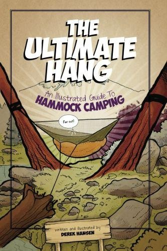
[吊床露营图解指南]
Derek Hansen 撰写并插图
尽管作者在准备本书时已经采取了所有合理的谨慎措施，但我们不对其内容的准确性或完整性做出保证，并且在法律允许的最大范围内，作者对从事本书中描述的活动的读者发生的事故或遭受的伤害不承担任何责任。安全悬挂！
文本和插图版权所有 © 2011 Derek Hansen
保留所有权利。未经1976年版权法或出版商明确许可，本书的任何部分不得以任何形式通过任何手段进行复制或传播，包括电子或机械方式、影印和录制，或通过任何信息存储和检索系统。许可申请应书面提交至 theultimatehang@gmail.com.
无痕户外(Leave No Trace)七项原则已针对吊床露营进行调整，经无痕户外道德中心许可印刷。更多信息请访问：http://www.LNT.org
数字版于2011年11月出版。2012年2月修订。
“简直太棒了！如果您是吊床露营新手，已经热爱吊床露营，或者只是想传播这种理念，这本书是必备读物。”
—Adam Hurst, HammockGear.com
“如果您想重新激发背包旅行体验，在任何地形上都能睡得舒适，那么这本书将为您提供所有关于悬挂舒适摇篮奇妙体验的收集情报。吊床露营是以前只用防雨布露营者的梦想。吊床露营有学习曲线，并不适合每个人…但如果您准备好在野外体验新的奇妙层次，那么这本书将成为您的指南。这真是个好东西！”
—Sean “Shug” Emery
“快速、有趣且优秀的读物。插图真正增加了阅读乐趣和清晰度。在过去十年中，吊床露营作为一种舒适、可持续、低影响的露营生活方式稳步发展。《终极悬挂》将增强新手和资深悬挂者的吊床悬挂体验。”
—Jack Tier 和 Jack Myers，Jacks ‘R’ Better有限责任公司所有者和创始人
“终于有了一本现代的、关于吊床露营各个方面的综合资源。轻松的插图加上出色的解释，使阅读既快速又愉快。每个现在和未来的吊床使用者都应该在书架上拥有这本书。”
—Stuart Raike, whoopieslings.com
“Derek的书在一个易于理解的概要中展示了吊床露营的基本原理以及更高级的技术。《终极悬挂》不仅涵盖了吊床露营的方方面面，还探讨了吊床零售商目前提供的一些装备及其使用。”
“即使像我这样使用吊床多年的人，也从《终极悬挂》中学到了一两件事。对于那些刚开始进入吊床露营世界的人或像我这样的长期使用者来说，这是一本必备书籍。”
—Jason “Headchange4u” Turner
我要对我的家人表示感谢，特别是我的妻子，她允许我进行这么多次徒步旅行和背包旅行，在那里我测试和探索了吊床露营。我还要感谢我的妻子鼓励我撰写和插图这本书，感谢她在编辑方面的协助，以及在许多个夜晚我用关于吊床的冗长乏味的单方面对话把她烦到睡着。我也感谢我的兄弟们Cameron、Jason和Breton的意见和编辑技能，以及我出色的父母，他们帮助编辑了早期草稿，并且一直恳求我为一本书画插图。
对于我的朋友Bill Linney，我欠他很多感谢，感谢他深夜的审阅和出版专业知识，这些帮助使这个项目成功。
我想向朋友们和论坛成员表示特别感谢：
“Just Jeff” Jackson
Jason “Headchange4u” Turner
Tim “slowhike” Garner
Mike “te-wa” Stivers
Sean “Shug” Emery
Thom “Dutch” Ressler
Jack Myers
Jack Tier
Grant “Cannibal” Doner
Patrick “NCPatrick” Brown
Sam “Angry Sparrow” Lentz
Stuart Raike
Adam “Stormcrow” Hurst
Paul Gibson
…以及各个吊床制造商审阅手稿并提出宝贵建议和更正。
这本书代表了我自己经验和试验的集合，但也受益于HammockForums.net成员的反馈和奉献精神，他们不断创新、探索和试验吊床露营。
—Derek
简单是终极的精致。
—列奥纳多·达·芬奇
我第一次体验全功能野营吊床是使用Hennessy Hammocks的Expedition ASYM。那是弗吉尼亚州的夏天，亚洲虎蚊正值高峰期。我跳进吊床，逃离了这些吸血的害虫，多亏了它内置的防虫网。我不担心下着的小雨，因为吊床配有匹配的雨布。我调整了内部的位置，通过斜向躺下来找到”最佳点”。不一会儿，我就在斜躺的极乐中放松下来。
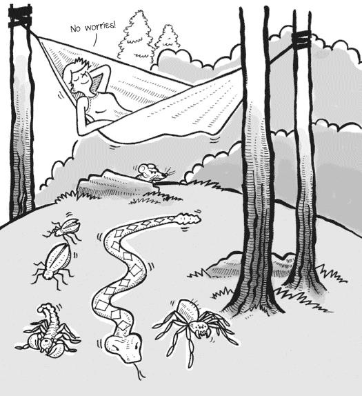
当我睡在地上或甚至在家里的床上时，当我的背部、手臂或肩膀感到不舒服时，我会翻来覆去。相比之下，吊床自然地消除了大部分（如果不是全部的话）压力点。我如此舒适，整晚都仰面而睡，几乎没有移动。我醒来时神清气爽，还有一个额外的好处：没有虫咬！
除了舒适之外，我喜欢吊床，因为它悬挂在离地面几英尺的地方，远离突出的卵石、潮湿的土壤、爬行的小动物和昆虫侵扰。这也意味着离开这个新”帐篷”就像站起来一样容易。
不再需要爬行和挤进狭小的空间，不再需要在打包前把帐篷晾干，不再需要刮掉泥土、树叶和蛞蝓。
我向家人和朋友大力推荐吊床，描述它就像”睡在云上”，并发誓再也不在地上睡觉了。
然而，自从第一次”悬挂”以来，我也经历了一些失望。当温度下降时，我发现了”寒冷臀部综合症”(CBS)，并了解到仅靠睡袋不足以保暖。我在冬天苦苦实验不同的保温选择，只有那些夏天初次睡眠的经历鼓励我坚持下去。
那个第一个冬天之后我学到了一些东西，现在我全年都能保持温暖、干燥和无虫害！如今，保温和其他便利设施的创新使制造商能够让吊床露营更加主流化，这意味着更多的人在发现睡在地面之上的舒适、实用和保护，而不会经历他们自己的”冰雪试炼”。
有这么多吊床款式，这么多固定吊床的技术，以及保持温暖、干燥和防虫的各种方法，很难找到最适合你的。本书提供新颖的想法、标准做法和可靠的资源，让你获得终极悬挂体验，无论你是吊床露营新手还是经验丰富的悬挂者。
当我和家人朋友谈论吊床露营时，我经常听到：“我可以在吊床上小睡，但整夜睡觉？那不不舒服吗？”当我进一步探讨时，我发现这些怀疑者对吊床的现代概念与许多后院常见的撑杆吊床有关。撑杆吊床(spreader bar hammock)采用原始设计，试图通过在两端使用长杆来像床一样平坦化。这种设计提高了重心，创造了一个非常容易翻倒的床。此外，大网眼编织随着时间推移变得不舒服，使这些吊床只能短时间使用。
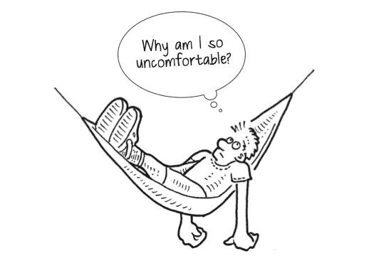
那么，吊床从何而来，它们是什么样的？大多数资料都指向南美洲的原住民是吊床的发明者。这些高架床是用树皮编织而成，两端收拢。它们在中间松散而深地悬挂，创造了低重心和安全、不会翻倒的”巢穴”。通过相对于中心线成角度睡觉（即对角线）——被称为”巴西”方式——使用者睡得符合人体工程学的平坦，而不是从头到脚戏剧性地弯曲。
在吊床中睡觉的好处很明显：更好的卫生条件；更凉爽、更舒适的睡眠；更少的感染；以及与咬人昆虫和毒蛇的更少接触。
吊床是1492年克里斯托弗·哥伦布登陆美洲时影响他的第一批发现之一。哥伦布被认为将吊床出口到欧洲，在那里它最终被采用为帆船上数百年的标准铺位。
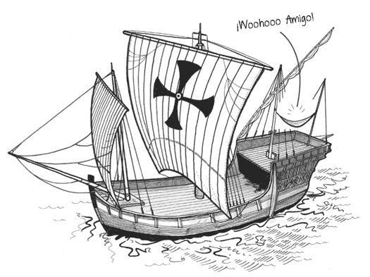
在船舶和南美洲土著人民之外，吊床露营的大规模采用较为缓慢。罗伯特·巴登-鲍威尔爵士记录了在1800年代后期使用吊床帐篷，并在1907年向童子军推广睡在地面之上。在1900年代访问中美洲和南美洲的科学家和探险家也认识到了吊床的好处。他们使用委内瑞拉吊床，具有高度透气的编织面料。这种款式通过添加防水布、防虫网和滴水线进行了改良。这种设计被称为”丛林”吊床(jungle hammock)。
在陆军少校克雷森·卡尼的投入下，美国军方为二战盟军以及后来在越南的部队委托制造了他们自己版本的丛林吊床。这些尼龙吊床为汤姆·亨尼西(Tom Hennessy)（Hennessy Hammock）和加里·克拉克(Gary Clark)（Clark Jungle Hammock）的现代设计提供了灵感，他们今天提供一些受欢迎的商业野营吊床。
吊床露营在寻找轻便、舒适庇护所的背包客中越来越受欢迎，特别是在夏季高峰期；然而悬挂者长期以来一直希望在寒冷气候中使用它们。像埃德·斯皮尔(Ed Speer)（Speer Hammock）、杰克·蒂尔(Jack Tier)和杰克·迈尔斯(Jack Myers)（Jacks ‘R’ Better）、摇滚中士(Sgt. Rock)、戴夫·沃姆布尔(Dave Womble)、汤姆·亨尼西(Tom Hennessy)和布兰登·瓦迪(Brandon Waddy)（Warbonnet Outdoors）等创新者，是最早推出吊床专用保温选项的人之一，使全年吊床露营成为可能。
今天我们很幸运拥有数十家专门从事吊床露营装备的制造商。
“Hammock.” (n.d.) http://en.wikipedia.org/wiki/Hammock
“What Came To Be Called America.” (n.d.) http://www.loc.gov/exhibits/1492/america.html
David Phillipson, Roll on the Rodney! (1999) 引用自
Baden-Powell, Young Knights of the Empire, (1916), 184
“Cresson Kearney” (n.d.) http://en.wikipedia.org/wiki/Cresson_Kearny
露营吊床之所以这样命名，是因为它们使用快干、防霉面料，并集成了标准的户外防护装备，如防虫网和防水雨布。换句话说，它具备帐篷的所有防护功能，但更宽敞、更轻便、更易维护、更可定制，最重要的是，提供了夜复一夜都值得期待的内置舒适性。
你可以使用已有的装备今天就开始吊床露营！睡袋和隔热垫等物品在吊床中仍然可以使用，不过你可能需要做一些调整。然而，有一些特定的吊床露营装备是帐篷中不常见的，比如攀爬硬件、树带、悬挂绳索和”底部保温被”。
倾向于吊床露营的人往往喜欢修补和实验。有些人引入了新技术或从其他行业借用材料，使悬挂吊床变得更容易或显著减少其重量和体积。基本的吊床构造也很简单，许多人制作自己的吊床或用自制装备进行定制。
你可以找到配备集成拉链防虫网和匹配雨布的完整露营吊床，开箱即用。你也可以单独购买组件，这是帐篷所没有的选择（不喜欢那个雨布的颜色？只能接受！）。我个人喜欢混合搭配吊床的各个部分，这样我可以为不同条件微调我的睡眠系统，并根据我的喜好个性化组件。另一方面，帐篷部件通常不能互换，有些支杆结构太复杂，不允许现场维修。吊床系统简单轻便，你可以带上备用的悬挂绳和带子，在重量或体积上几乎没有负担。
寻找轻量化装备？你会在每个重量类别和风格中找到适合你需求的吊床。轻量化面料的突破和其他设计创新使超轻量化者能够找到舒适的吊床系统，并保持低于5磅（2.3公斤）的基础重量。
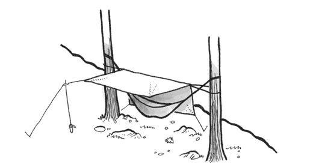
优点
舒适
便携（适合日间徒步或露营旅行）
轻量化单人庇护所
快速易于设置——没有任何东西接触地面，所以一切都保持清洁干燥
独立的雨布让你在雨中设置
睡在虫子和粘滑物体上方
快干合成面料
背部没有石头、树根或细枝
符合无痕户外原则：不压实土壤，无需改变地点
个性化和模块化组件
有助于缓解肌肉酸痛和背痛（贴合身体形状）
早晨从坐姿起身容易
适合不平坦、粗糙的地形
缺点
没有保温会很冷（在闷热的夏天很棒，但在较冷的月份是挑战）
需要两个锚点才能在地面上方搭建
需要调整才能”平坦”睡眠
不适合多人使用
优点
完全封闭的庇护所
适合与多人共享庇护所
适合树线以上（不需要额外支撑）的独立庇护所
本质上更温暖的庇护所
缺点
压实土壤
沉重且体积大
可能变得炎热闷湿
如果不在平地上会滑动和移位
冷凝收集器
需要清理地面的石头、树根和细枝
必须找到相对平坦的地点设置
狭窄和小
必须在里面爬行
在暴雨后的重度使用地点，帐篷容易被淹没，因为水可能流入庇护所
必须晾干庇护所，刮掉底部的污泥，并在打包存放前扫除/摇出
在本书中，我将使用一些在吊床爱好者中常用但对你可能是新的术语。
锚点(Anchor)
连接点，通常用不伸缩的织带创建。
桥式吊床(Bridge Hammock)
模仿悬索桥的吊床，允许使用者从头到脚平躺

防虫网(Bug Netting)
细网眼面料屏障，防护飞虫和咬人昆虫。可以缝在吊床上或包裹起来提供360°保护。
冷屁股综合症(Cold Butt Syndrome, CBS)
由吊床下方保温不足引起的现象，在背部产生冷点，通常从臀部开始。
双层(Double Layer)
具有两层面料的吊床，可以在两层之间塞入保温材料。
收口式吊床(Gathered-end Hammock)
基于南美洲原始设计的吊床，长方形面料在两端收拢，使用者斜对角睡在中心线上。
团体悬挂(Group Hang)
吊床爱好者的聚会。
拉绳(Guyline)
固定防雨布或吊床边缘的小绳或绳索。
悬挂者(Hanger)
开明的吊床露营者。
悬挂(Hanging)
搭建或设置吊床的艺术。
脊线(Ridgeline)
从吊床或防雨布两个端点连接的绳索。用于悬挂物品、抬起防虫网，或防止吊床拉得太紧或太松。
悬挂绳(Suspension Line)
从吊床到锚点的绳索。
冬季防雨布(Winter Tarp)
带有额外拉点和侧板”门”（缝制或可拆卸）的大型防雨布，用于创建完全封闭的庇护所。
顶部被子(Top Quilt, TQ)
没有拉链或背部的睡袋，铺在悬挂者上方并像被子一样塞在两侧。
底部防护(Under Cover)
保护吊床和底部保温被免受飞溅的防水护盾。
底部保温被(Under Quilt, UQ)
吊床下方包裹的保温材料，避免被压缩。
终极悬挂(The Ultimate Hang)
在令人惊叹的景观附近搭建吊床。
Whoopie吊索(Whoopie Slings)
由高强度Dyneema绳制成的轻量、低体积、可调节悬挂绳。
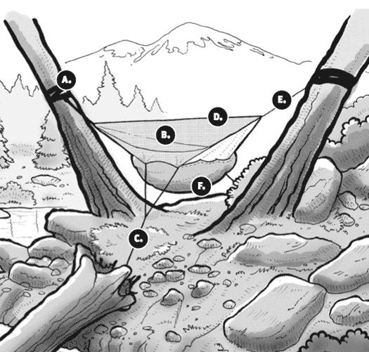
无论您是第一次搭建吊床，还是已经有了一些悬挂经验，温习基础知识都是个好主意。我们将在本书后面深入讨论每个主题，但这些快速要点应该能让您朝正确的方向躺下。
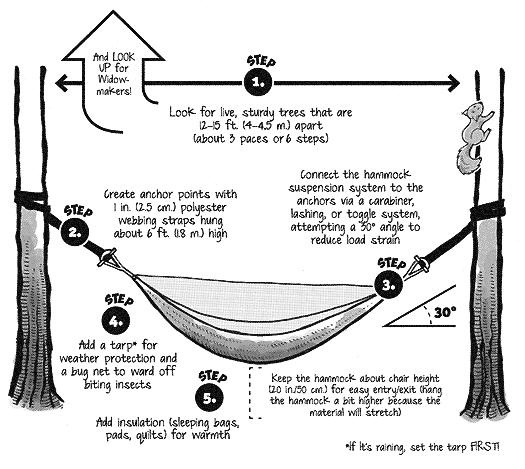
搭建吊床很简单，如果做得正确，不仅能提高您的舒适度，还能保护户外资源并减少装备故障。这些基本原则并非固定不变的规则。了解基础知识，并根据您的吊床和条件调整这些原则。
如果您是吊床露营新手，请在深入研究本书之前复习本节并练习基础知识。
树带
悬挂绳
防雨篷布
防虫网
保温材料
一体式露营吊床（如Hennessy吊床、Warbonnet户外用品、Clark丛林吊床等）会将这些物品大部分整合在一起，就像帐篷一样，但您也可以根据自己的喜好拼凑这些物品。要在户外可行，您的吊床需要防天气保护、足够的保温性，以及根据季节需要的防虫保护。树带和悬挂绳是经常被忽视的必需品。一些吊床制造商只销售吊床主体，所以请确保您有办法捆绑或”悬挂”吊床，并以安全、牢固且不损害树木的方式固定它。
吊床—大多数露营吊床两端收拢，尺寸大致相同：长度在9-10英尺（2.5-3米）之间，宽度4-5英尺（1-1.5米）。本书中的建议是为露营吊床量身定制的，几乎适用于所有情况。使用这些技术将确保您有正确的距离和空间来进行防雨保护、绑带和悬挂绳。
首先要寻找的是相距12-15英尺（4-5米）的锚点。如果您使用树木，它们的直径应至少为6英寸（15厘米）—足够粗壮能承受您的重量，但又不能太大以致无法缠绕您的绑带。锚点可以是任何足够坚固以支撑悬挂物理力学的东西。我曾在凉亭、亭子、足球门柱，甚至车辆之间找到完美的空间。
宽度为1-2英寸（2.5-5厘米）的不拉伸聚酯织带最适合在树木周围创建锚点，因为它们有助于分散重量而不会切入树皮。在织带上缝制或打结的环能让过程更容易。
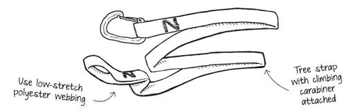
警告：永远不要在树上绑绳子。您有切割树皮和损害富含营养层的风险，从而削弱树木并使其容易受到昆虫和疾病的侵害。
要设置您的绑带，伸手到大约头部高度（大约6英尺/1.8米高或更高），将绑带缠绕在树上以创建锚点。您可以多次缠绕织带来调整长度。
使用攀岩级扣环或其他硬件选项将悬挂绳连接到锚点。
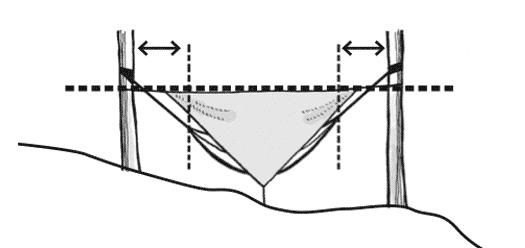
提示：调整吊床，使其在不平坦地形上的锚点之间均匀悬挂在相同相对高度。

您要确保吊床在锚点之间居中，并在不平坦地形上处于相同的相对高度。这使得吊床可以在帐篷无法工作的区域搭建。当您躺入吊床时，它应该停留在大约椅子高度（20英寸/50厘米）。如果材料会拉伸，您可能需要将吊床设置高几英寸。
篷布用于天气保护，防虫网用于昆虫保护。您可以为吊床使用任何种类的篷布，只要它足够大能覆盖您和您的装备。一个8×8英尺（2.4×2.4米）的篷布，旋转45°，形成绝佳的菱形。专门为吊床设计和缝制的轻量背包篷布可从装备制造商处获得。一些吊床配备了缝入式防虫网，使搭建更容易。售后防虫网可适配大多数吊床。
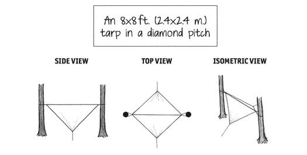
要睡一整夜，您需要一些保温材料，特别是当温度降至70°F（21°C）以下时。常规睡袋能让您在上方保暖，但您需要下方的保温材料来保持舒适。当您躺在睡袋里—无论是在吊床中还是在地面上—保温材料在您下方被压缩，变得无用。这就是为什么在帐篷中使用垫子的原因—部分是为了舒适，但更多的是防止传导热损失。在吊床中，您会因空气在周围循环而有对流热损失。在吊床内躺在垫子上会让您保暖（您需要一个宽垫子，也能包裹您的肩膀）。大多数悬挂者(hangers)在内部使用睡袋或被子，在下方使用底被(under quilt)来保暖。本书后面有更多关于保暖的信息。
一些露营吊床采用双层织物结构，创造一个袖套，垫子可以固定在其中以防止移位。
要进入吊床，将织物展开，向后退一小步，坐在中央。摆动您的腿进入并调整您的身体，使您斜躺（巴西方式），而不是与吊床悬挂方向一致。通过斜躺，您可以在收拢端吊床中获得近乎平坦、符合人体工程学的位置。移动直到您找到一个”甜蜜点”，在那里您会落入到位。
通常，更大、更宽的吊床比窄的吊床更舒适。调整高度、悬挂角度和锚点距离都会影响躺卧感。
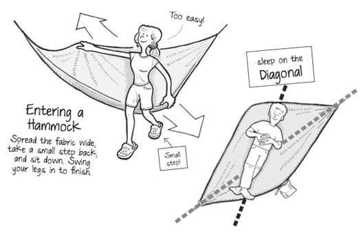
虽然有很多正确悬挂的好例子，但也有很多错误的例子会误导你。不幸的是，有一些突出的例子显示吊床直接用绳子绑在树上或悬挂得太紧。有时糟糕的悬挂只会导致不舒适的睡眠，但其他情况可能更危险。我见过人们在锚点使用迷你钩环(mini carabiners)（是的，它们会弯曲并很快弹开），甚至见过吊床因为绷得太紧而被撕成两半。
希望本书中说明的例子和技巧能为你指明正确方向，让你能够安全、负责任地享受吊床露营(hammock camping)的舒适、便利和简单。
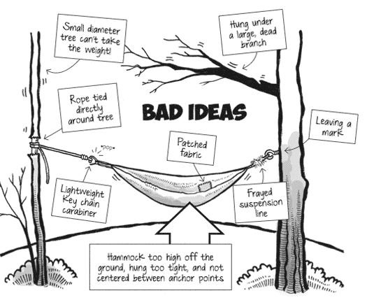
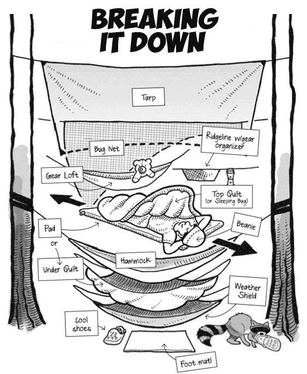
使用吊床露营开启了帐篷或bivvies无法提供的广泛可能性。我曾在夏威夷的巨石上架设吊床，跨越亚利桑那州北部的古老熔岩流，在弗吉尼亚州的悬崖和倾斜山丘附近，以及在犹他州南部的仙人掌间架设。我不再需要清理地面的树枝或岩石，也不用担心泥浆、蜗牛和沙地（符合无痕露营原则！）。然而，尽管吊床可以架设来避开大多数障碍物，但好的营地仍然是找到的，而不是制造的。即使在满是树木的森林中，也可能需要几分钟才能找到合适的地点。
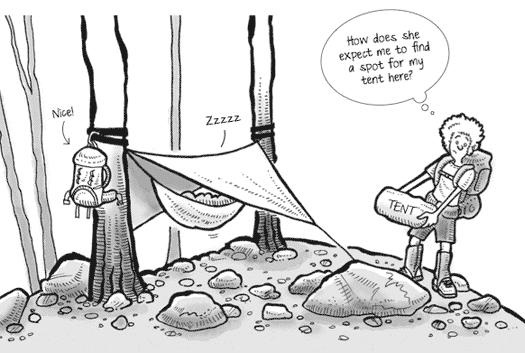
提示： 你很少（如果有的话）需要改变营地（例如，折断活的

树枝，移除碍事的灌木丛）来架设吊床。在大多数情况下，你只需要找另一棵树。
虽然吊床几乎可以在任何地方架设，但要明智并评估风险以确定哪个位置安全。悬挂在水体上方或悬崖边缘附近对某些人来说可能是令人振奋的刺激，但风险很高。即使悬挂在一堆锯齿状岩石或仙人掌植物上方也会带来潜在问题。吊床的主要风险包括不安全的装备、闪电、熊和其他动物，以及寡妇制造者(widowmakers)。
安全悬挂的首要考虑是确保吊床系统的所有部件都经过安全等级认证，能够承受将要支撑的重量。大多数悬挂者建议吊床织物本身的最小断裂强度为250磅（113公斤），悬挂绳和织带的断裂强度大于1000磅（454公斤）。你的吊床只能和最薄弱的环节一样强。因为某些部件失效而摔到地上并不是愉快的体验。
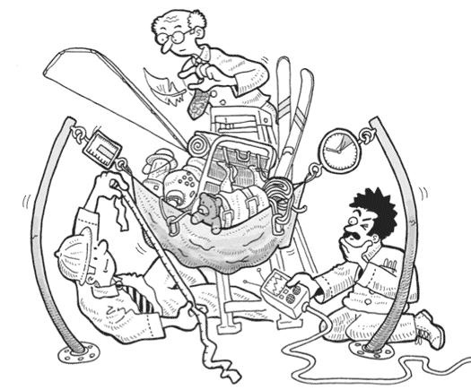
在许多方面，吊床的每个组件都应该像攀岩和绳降装备一样仔细选择。确保织带、悬挂绳、硬件和织物都处于最佳状态。任何显示磨损迹象的元件都应该妥善修复（如果可能）或更换。在每次悬挂前后检查装备是个好主意。
在试验或测试不同技巧时（例如，尝试使用织带配合下降环），在你自己坐进去之前，先在吊床中放置装备来模拟重量负荷。绳结应该正确、牢固地打结。
就像攀岩者学会信任她的装备一样，你将发现你的装备在哪里感觉最安全，它能带你到哪里。永远不要认为这是理所当然的。
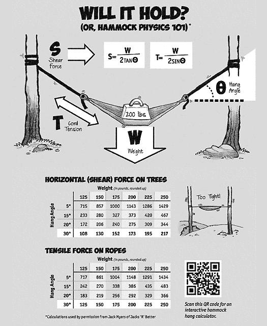
吊床在雷暴中比帐篷更安全吗？闪电会因为吊床悬空在地面之上而避开它吗？电暴对所有户外活动都是关注点，吊床也不例外。闪电通常会沿着阻力最小的路径传播，电流可以流入吊床（或帐篷，就此而言——尼龙对雷击没有防护作用！）。绳索和织带对闪电没有防御或保护作用。

虽然对偶尔的”晴天霹雳”没有防御方法，闪电是一个可管理的风险。遵循这些一般规则来最小化被击中的可能性：
选择在低矮树林中悬挂的地点
避免孤立或高大的树木或孤立的树群
远离山脊和山丘
在最后一次闪电击中后至少等待30分钟再架设或移动你的吊床
被闪电击中是非常罕见的。露营时，更常见的是遇到小型啮齿动物或倒下的树木（寡妇制造者），但这些风险也是可管理和可避免的。
有关雷暴期间户外安全的更多信息，请访问国家气象局网站：
http://www.lightningsafety.noaa.gov/outdoors.htm
户外露营时另一个常见的担忧是应对动物，特别是熊。虽然关于动物调查吊床的故事在流传，但这种遭遇很少见。小动物可能直接从你的吊床下面走过而不会嗅一嗅。有些人开玩笑说吊床是”熊肉卷”，但很少有证据表明动物，特别是熊，会被吊床吸引，也没有证据表明吊床本身与食物有关。
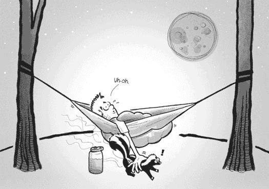
许多动物被气味吸引。遵循无痕露营准则，将所有有气味的物品远离睡眠区域。这种技巧将防止大多数小动物打扰你。建议在远离（200英尺/61米）吊床的地方烹饪，并准备一套”干净”的睡衣在睡觉时换上。
高度影响区域，那些与食物气味相关的地方，比如阿巴拉契亚小径沿线的一些庇护所，是小型啮齿动物的磁铁。悬挂吊床是避免这些讨厌动物的好方法。对于那些徘徊在营地的好奇动物，通常最好让它们通过而不要惊吓它们。
最常见的露营风险是一个无声而致命的危险：寡妇制造者(widowmaker)。寡妇制造者是指枯死的立木——或者带有大型枯死树枝的活树——对附近或头顶构成威胁。每年都有露营者被倒下的树木或头顶树枝击中的灾难性报告。
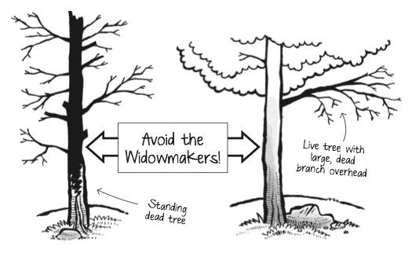
在所有与露营相关的风险中，寡妇制造者可能是最容易避免但也是最容易被忽视的。枯死的立木很容易识别（除非你在天黑后才搭建）。枯死的树木会没有叶子，通常缺失大块树皮和树枝。一些枯死的树木会腐烂并在中心空洞。
带有大型枯死树枝的活树是个问题，因为它们不太明显。要注意周围环境并遵循以下建议来远离寡妇制造者：
永远不要将吊床固定在枯死的树上，无论它看起来多么坚固。强风可能会推倒树木或使树枝掉落。
选择树木时，一定要向上看，确保你头顶的区域是安全的。
在满是树木的森林中，过多的选择可能会让人不知所措。你不再寻找没有岩石和树根的平坦区域，而是寻找位于令人印象深刻的观景点附近的完美位置树木，或者足够靠近的树木，你和朋友可以共享一块防水布。你可能再也不会看地面了。对我来说，在大型障碍物上方或荆棘丛上方悬挂吊床有着不可抗拒的吸引力，就因为我可以这样做。我经常发现自己在想：“哇！那会是悬挂吊床的绝佳地点！”
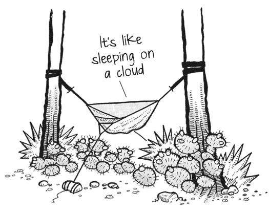
选择悬挂位置归结为在受保护的位置（远离强风和湿气）选择合适的树木，提供绝佳的景观，同时不打扰野生动物和其他游客。

最好的树木应该是活着的，提供坚固的树干或树枝——至少6-8英寸（15-20厘米）厚——在那里你可以用织带创建固定点。如果可能，选择有厚实、粗糙树皮的树木，并始终携带适当的带子和垫子来保护树皮。
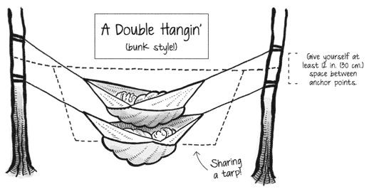
等等！为什么要用树带？ 这可能听起来过度保护，但这是有充分理由的。细绳可能会无意中切入树皮，损害树木的形成层或营养层（树木的生命汁液通过树皮内最外层环流动，而不是通过中心）。在偏远地区的一次悬挂可能永远不会被注意到，但在使用频繁的热门地点，小的影响会发展成明显的问题。随着越来越多的人使用吊床，护林员和营地管理员正在关注，在一些地方，甚至制定了限制或禁止使用吊床的规定。不负责任的个人可能会破坏未来使用的机会。
我经常和我的孩子们一起背包旅行，我们喜欢将吊床悬挂得很近，为多个吊床共享一块防水布。要实现这一点，找到间距完美的合适树木是关键。有两个吊床时，我通常会以上下铺的方式悬挂它们，将上层吊床架设在下层吊床上方约一英尺（30厘米）的位置。
一些有战略性分支的树木可以提供多个固定点，这样几个吊床可以放置得很近。

提示： 大多数吊床可以在几分钟内搭建完成，这意味着你可以更灵活，花时间找到一个完美的地点。
远离风和降水是保持干燥和温暖的一步。如果可能，在山丘或岩石露头的背风面找一个位置，这将提供一个保护口袋。避免被风吹得很厉害且更容易遭受雷击的山顶，远离低谷，那里的温度逆转可能会造成显著的夜间寒冷区域（然而，这些”寒冷区域”在夏天的炎热中是更好的选择！）。
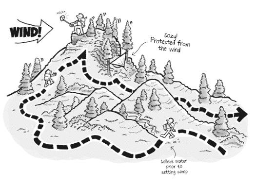
在没有山丘或山脉的地区，你也可以找到宁静、受保护的地点。茂密的植被或密集的树木群可以创造天然的风障，并有助于偏转横向的雨水。在徒步时注意风向，并利用地形优势。
吊床相对于地面住宿者的另一个优势是有机会在具有无与伦比景观的偏远位置搭建。对于帐篷来说困难或不可能的崎岖露头和远景可能对吊床来说是完美的。
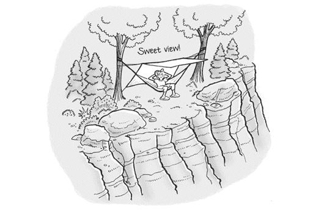
离开过度受影响的地点，因为你可以！这是减少”地点蔓延”的好方法——这是拥挤和热门庇护所及露营地的一个问题，帐篷露营者逐渐扩大受影响区域。帐篷露营者避开被践踏、泥泞的区域，只是在附近创造新的区域。
如果可能，我喜欢找到在绝佳景观附近有许多大岩石或石头的地点。我最喜欢的悬挂地点之一是在亚利桑那州北部的胡桃峡谷边缘。那里确实没有地方可以舒适地搭建帐篷，所以用我的吊床，我独享整个岩架。虽然我没有跌落的危险，但我距离边缘足够近，可以不受阻碍地俯瞰整个峡谷。早晨，阳光照射到峡谷边缘，照亮了下面的山谷。一层白色薄雾缓慢地退入一个峡谷，创造了一个令人惊叹的景象。
有时选择合适的位置是为了避开其他露营者并保持不被发现。无痕山林原则建议在距离步道、水源和其他游客至少200英尺（60米）的地方露营。这是尊重附近露营者、减少对拥挤地点的影响、尊重野生动物并享受一些独处时光的好方法。
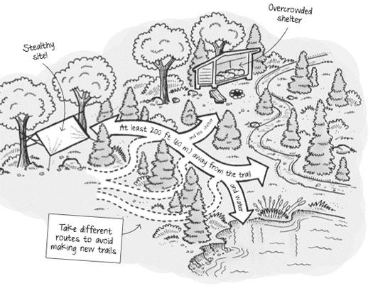
像这样设置吊床营地通常被称为”隐秘悬挂”。这项技术结合了营地选择和装备选择。寻找远离过度使用和高度影响区域的营地。选择对帐篷不友好的地点。对一些人来说，“隐秘”还意味着使用大地色调或迷彩色面料，能够轻松融入周围环境。
隐秘悬挂并不意味着非法露营。始终要负责任并遵守张贴的规则和政策。
支持吊床露营的有力论据是它们对荒野的低影响程度。通过在植被上方悬挂避难所（或者更好的是，在岩石或其他耐用地形上方），你几乎消除了任何影响，意味着更少的土壤压实（植物在坚硬的地面上不能很好地生长）。而且使用树带，你可以离开营地时不留下任何你曾经到过那里的痕迹。
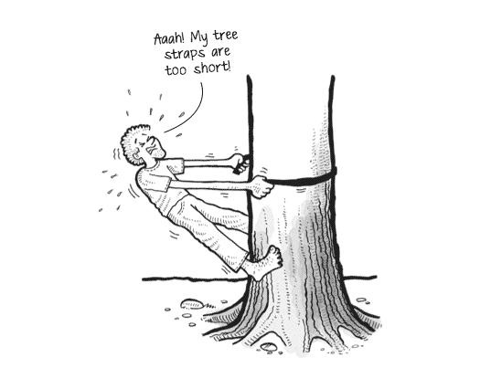
但是如果不小心，即使是吊床也可能造成一些损害。有些露营地专门禁止吊床。通常，这是由于一些粗心的露营者造成的，在其他情况下，这是由于某个地点受欢迎程度而采取的预防措施。
在吊床露营时请遵守无痕山野七原则。
提前了解什么是被允许和/或被禁止的。一些地点禁止吊床或任何绑在树上的东西。遵守任何张贴的规则。你传播的善意可以在很大程度上确保吊床不会因为少数人的粗心行为而被随意禁止。
确保你的织带足够长，能够适应你将遇到的树木，并且至少1英寸（2.5厘米）厚，以避免损坏树皮。
了解你将要访问地区的法规和特殊关注事项。
为极端天气、危险和紧急情况做准备。
安排你的行程以避开高峰使用时间。
尽可能小组出行。考虑将大团体分成较小的团体。
重新包装食物以减少浪费。
使用地图和指南针消除使用标记漆、石标或旗帜的需要。
由于你可以在”恶劣”地形上悬挂吊床，你通常可以使用能够减少影响的耐用表面，如岩石、露头、雪和沙子。
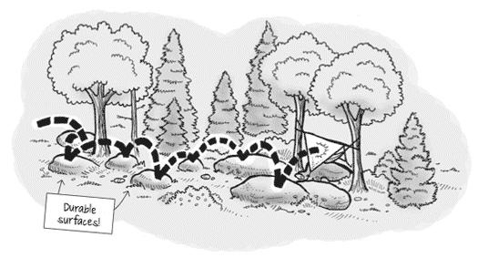
虽然你可以在高度影响的露营地之外找到悬挂的地方，但要确保将该区域视为原始状态：不要通过往返吊床时走相同的路径来创建新的小径。如果在原始区域参加集体悬挂，分散开来以限制对任何一个区域的影响。
耐用表面包括已建立的小径和露营地、岩石、砾石、干草或雪。
通过距离湖泊和溪流至少200英尺（60米）的地方露营来保护河岸区域。
好的露营地是找到的，不是建造的。改变营地是没有必要的。
在受欢迎的地区：
将使用集中在现有小径和露营地上。即使在潮湿或泥泞时也要在小径中间单行行走。保持露营地小。将活动集中在没有植被的区域。
在原始地区：
分散使用以防止创建露营地和小径。避免影响刚刚开始的地方。
一些吊床露营套装带有许多组件，有可能会放错它们。根据HammockForums.net的一项投票，最常见的”遗忘”物品是织带（我自己在一次背包旅行中不得不找回一个）。检查你的营地以确保你收集了所有装备。一些悬挂者甚至使用鲜艳颜色的丝带、织带和拉绳来使组件更容易找到。
带进来，带出去。检查你的露营地和休息区是否有垃圾或洒落的食物。打包所有垃圾、剩余食物和废物。
将固体人类排泄物放置在距离水源、营地和小径至少200英尺（60米）、深6-8英寸（15-20厘米）的猫洞中。完成后覆盖和伪装猫洞。
打包厕纸和卫生用品。
要清洗自己或餐具，将水带到距离溪流或湖泊200英尺（60米）的地方，使用少量可生物降解的肥皂。撒散过滤后的洗碗水。
使用吊床可以轻松最小化营地改动。没有必要从营地移除岩石、树枝或松果。避免损坏活树和植物。
保护过去：观察，但不要触摸文化或历史结构和文物。
保持岩石、植物和其他自然物体的原样。
避免引入或运输非本土物种。
不要建造结构、家具或挖掘沟渠。
篝火是露营中有趣且通常不可缺少的一部分，用于取暖和陪伴。在某些地区，你可以想象在火附近悬挂吊床，但这可能非常危险。在允许篝火的地方，要明智，不要将吊床悬挂得离明火太近。大多数露营吊床和防水布都是用高度易燃的尼龙织物制成的。
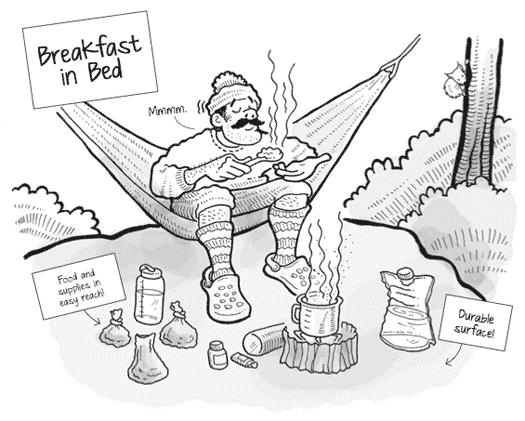
篝火可能对荒野造成持久影响。使用轻便炉具烹饪，享受蜡烛灯笼照明。
在允许生火的地方，使用已建立的火圈、火盆或土堆火。
保持火小。只使用地面上可以用手折断的树枝。
将所有木材和煤炭燃烧至灰烬，完全扑灭篝火，然后撒散冷却的灰烬。
在大峡谷，公园管理员允许在露营地负责任地悬挂吊床，但要求你在白天移除吊床，因为麋鹿和鹿经常光顾公园，可能会被悬挂在树间的绳索缠住。询问你当地的露营地关于你所在地区的具体规则。
许多吊床使用者喜欢在吊床中烹饪或用餐，特别是早餐时。这可以是一种愉快放松的体验（嘿！床上早餐！），但在熊类活动频繁的地区或季节，比如阿巴拉契亚步道的某些庇护所或熊类经常造访的营地，不建议这样做。风险不值得为了短暂的快乐。洒落的食物和飘散的香气会在织物和露营区域留下气味，这可能会有问题。只有在残留气味能够在白天消散时才在吊床中用餐和/或烹饪（例如，早餐和午餐）。此外，只使用背包式炉具，这样你可以轻松控制火焰并保护自己和吊床装备。
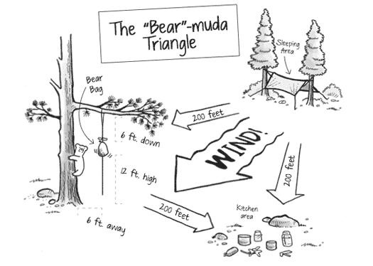
远距离观察野生动物。不要跟踪或接近它们。
绝不喂食动物。喂食野生动物会损害它们的健康，改变自然行为，并使它们暴露于捕食者和其他危险中。
通过安全储存口粮和垃圾来保护野生动物和你的食物。始终使用熊袋或熊罐。
始终控制宠物，或将它们留在家中。
在敏感时期避免打扰野生动物：交配、筑巢、育幼或冬季。
你可以找到各种颜色的吊床装备，包括鲨鱼灰、竹黄色、鼠尾草绿，甚至各种军用迷彩图案。虽然不要求与自然融为一体，但其他游客可能不希望在树林中看到令人震惊的粉色防水布。为了做到这一点，通过将吊床设置在视线之外来体贴他人，无论你的装备是什么颜色。如果你遵循无痕原则，远离步道、溪流和湖泊以及其他庇护所至少200英尺（60米），这很容易做到。
吊床让午餐休息和徒步中途休息变得轻而易举。我总是在日间徒步时带着吊床，寻找远离步道的绝佳地点，在那里我可以坐下放松。当备选方案是岩石和倒下的树木时，舒适度几乎没有可比性。吊床是完美的躺椅，我可以松开凉鞋，抬起脚，观看其他徒步者经过我隐蔽的休息站。有了吊床，我不必局限于步道旁最近的树桩来休息，所以我可以远离小径，不会打扰任何人。
尊重其他游客并保护他们体验的质量。
要有礼貌。在步道上为其他使用者让路。
遇到驮畜时走到步道的下坡一侧。
在远离步道和其他游客的地方休息和露营。
让大自然的声音占主导。避免大声说话和噪音。

根据无痕准则安全选择了你的首选地点后，是时候挂起来了！你已经知道要寻找相距12-15英尺（4-4.5米）的树木来创造相当深的下垂（对于聚端吊床），并保持椅子高度离地，对吧？但是那个神奇的30°悬挂角度呢，锚点应该设置在距离地面多高的位置？用一个简单的技巧可以相当容易地实现所有这些：
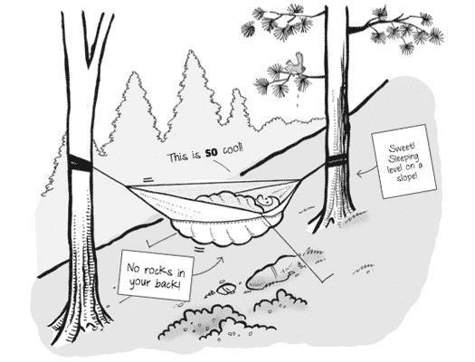
三步、伸手、悬挂。以下是具体做法。
平均人步长约为30英寸（76厘米）。一步（两个脚步）约为60英寸。支撑点之间的最佳距离在12到15英尺（4到4.5米）之间，所以你需要找到相距约3步（6个脚步）的两棵树。这个距离为吊床和防水布都提供了空间（防水布应该延伸到吊床两端之外以获得最大保护）。
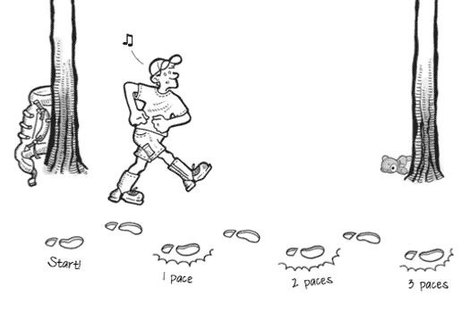
树木相距越远，锚点就需要设置得越高，以获得30度的悬挂角度。任何超过15英尺（4.5米）的距离，你都无法在不攀爬的情况下在树上够到足够高的位置来设置锚点。当吊床悬挂得太远太高时，设置会更加下垂，吊床不会铺得那么好。
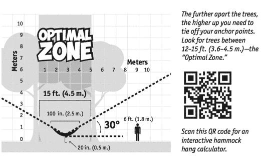
通过练习和经验，你将能够自信而一致地目测完美的树木。
选定树木后，伸手到头部或肩膀高度，将织带绕在树上创建锚点。平均人身高约为6英尺（1.8米），所以你可以轻松估计在哪里设置织带，而无需拖着卷尺。
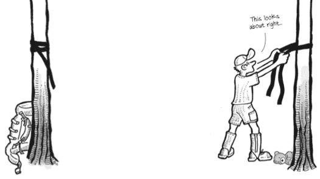
一些吊床使用者喜欢稍微抬高吊床的脚端以提高舒适度，并防止滑向吊床中部，但这是个人选择。我发现水平的吊床效果很好。
锚点设置好后，吊床就可以悬挂了！将悬挂绳连接到锚点，使吊床底部距地面约20英寸（50厘米）——大约椅子高度。如果吊床下垂太低，你可能需要提高锚点。此外，调整悬挂系统以确保吊床在锚点之间居中均匀，并且左右相当水平。
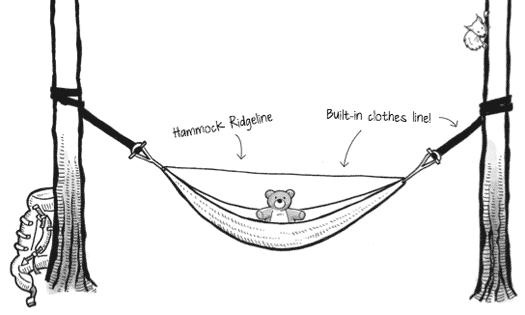
此时，你可以安装防虫网（如果是分离式的）、防水布和保温层（睡袋、垫子、底被等）。将任何湿润或潮湿的装备挂在脊线或悬挂系统上晾干，然后放松！
但是如果下雨怎么办？ 简单地先设置防水布。你可以按照相同的步骤悬挂防水布，然后在干燥的围栏下设置吊床。很少有帐篷提供让你单独搭建防雨布或在搭建主帐篷体之前搭建的选项。有了防水布，你可以设置吊床系统并保护装备。
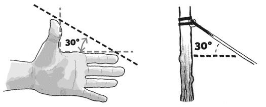
提示： 用手检查30度角度的一种方法。伸直手臂，拇指伸展。

从拇指尖到食指画一条假想线来近似30度角。

提示： 测量从地面到锚点向上的角度。
吊床的弧度(sag)深度（聚端式吊床）决定了你能躺多平。弧度可以根据个人喜好进行调整。保持吊床每次悬挂时具有相同”弧度”的简单而有效的方法是使用连接吊床两个端点的脊线(ridgeline)。这条脊线防止吊床被拉得太紧。
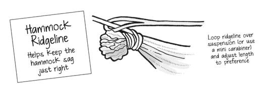
大多数悬挂者发现100英寸（2.5米）的吊床脊线(ridgeline)长度接近完美。你可以调整脊线来达到适合你的”弧度”。
脊线(ridgeline)是悬挂灯具、悬挂装备收纳器或晾干湿衣服的好地方。如果你需要在吊床上方使用防虫网(bug netting)，它很有用，因为它能让防虫网远离你的身体。
脊线(ridgeline)不是必需的，但通常被使用。坐在吊床里时它可能会碍事，所以一些悬挂者使用迷你钩环扣在不使用时快速拆卸脊线。
在网上随便搜索露营吊床，你会看到数十个可用的品牌。即使是简单的聚端式吊床也得到了增强，可能会变得复杂，增加了脊线(ridgeline)、集成的防蚊虫网(no-see-um bug netting)或双层织物。露营吊床有三种基本样式：聚端式、桥式和撑杆式。
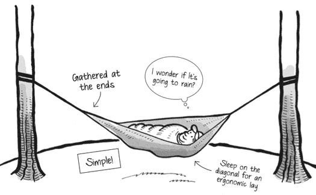
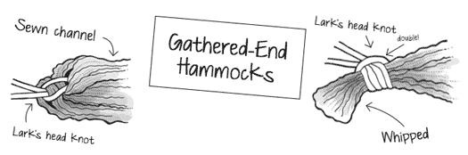
聚端式吊床(gathered-end hammocks)结构和设计简单——基本上是一块矩形织物在短端聚集。你可以通过购买几码1.9盎司的防撕尼龙织物并在端部包边，或在每端缝制一个通道并用绳子系在一起，轻松制作自己的聚端式吊床。许多吊床的标准尺寸是10×5英尺（3×1.5米），尽管你可以找到许多比那更小的。来自南美的大型手工编织吊床可能更大。许多制造商在端部缝制通道，绳索或带子（如Whoopie吊带）可以穿过以聚集端部并悬挂吊床。Hennessy吊床使用精心设计的折叠技术在吊床中创造定制的褶皱和弧度。虽然技术各异，但聚端式吊床本质上是相同的，以南美发现的为模型。
聚端式吊床(gathered-end hammocks)是迄今为止最常见的露营和背包客吊床，因为它们的多功能性、轻重量和简单性——这是一个久经考验的可靠吊床。
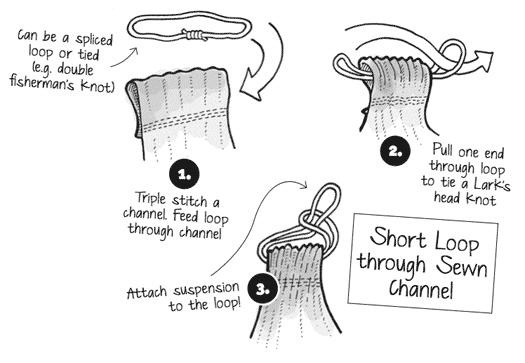
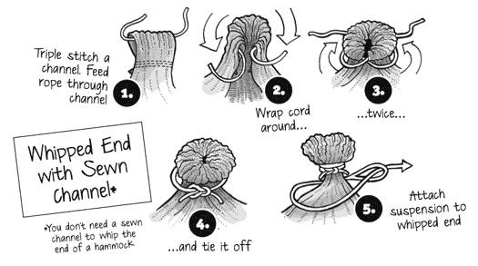
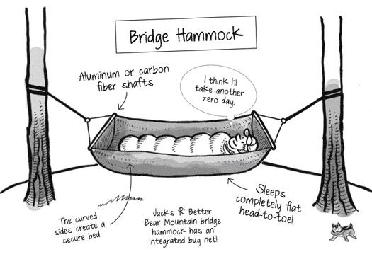
也许不太常见，但唯一一种具有真正头到脚”平躺”的吊床样式是桥式吊床(bridge hammock)。Jacks ‘R’ Better在熊山桥式吊床中推出了第一个商业化的桥式吊床。这种样式以悬索桥为模型，具有悬链曲线边缘，并使用两根杆来帮助保持其端部形状。
那些使用聚端式吊床难以找到良好位置的人可能会发现桥式风格更适合他们。桥式吊床也可以制作，但模板更复杂。你可以在HammockForums.net上找到说明。
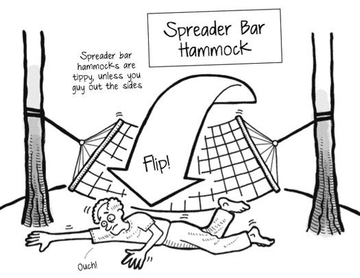
常见的后院休闲吊床是撑杆式吊床(spreader bar hammock)。撑杆(spreader bars)试图使吊床尽可能平坦，与桥式设计不同。这些吊床是为临时休闲而设计的，不适合过夜露营。然而，有一些露营吊床使用撑杆式设计，如Crazy Creek LEX和Lawson吊床蓝岭，它们结合了防虫网、帐篷杆和防水布以提供完全保护。
撑杆式设计容易倾倒，因为重心太高。

提示： 通过拉紧角落或侧面来防止撑杆式吊床倾倒。
混合设计结合了不同元素，如撑杆(spreader bars)、绳结端部和计算机建模设计。一些值得注意的例子包括Clark丛林吊床的Vertex等真正的双人吊床，每个使用者都睡在自己的”巢”里。甚至还有像Mosquito吊床的蝙蝠吊床这样的单点设计，非常适合多日攀岩活动，你可以直接悬挂在悬崖面上。
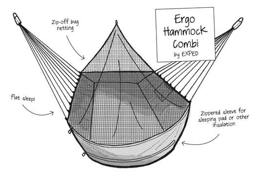
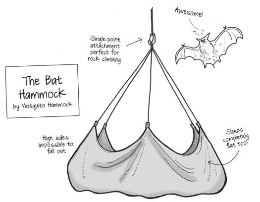
吊床非常适合修补和实验，所以许多从一种风格开始的人经常尝试其他风格——在创造他们完美系统时进行建造和测试。许多狂热的悬挂者尝试了新的保温方法和材料，改善了人们保暖的方式。其他发现和发明彻底改变了吊床防水布、悬挂绳索，甚至打包方法。
许多人，特别是那些从帐篷过渡的人，想知道是否有多个人可以舒适地睡在一个吊床里。简短的回答是明确的”也许”。是的，大型吊床可以容纳更多人，但不，对于睡眠来说这并不舒适。大多数吊床，无论大小，都是为单人使用而设计的。对于一些人来说，双人使用的愿望是为了保持亲密，而其他人想要共享装备，也许在过程中节省一些背包重量。
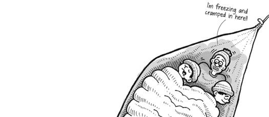
把吊床更多地想象成升级版的个人睡垫。在帐篷里，大多数人使用自己的垫子和睡袋，但睡得很近。通过良好的营地选择，并排悬挂吊床或堆叠它们，你仍然可以在吊床中实现舒适的接近。我经常在与家人露营时这样做，因为让我的孩子在伸手可及的地方很有帮助。偶尔，当我的孩子们无法入睡时，我会带一个（或两个）孩子到我的吊床里，但我会感到不舒服和寒冷。
吊床天然地包裹并贴合你的身体，这是它们如此舒适的原因之一。增加更多人会产生尴尬的脊线，并降低内部人员的舒适度。要正常工作，使用者必须一起移动和翻身，就像花样游泳运动员一样。就个人而言，我更喜欢在近距离内拥有单独的吊床。我认为这是两全其美的选择：个性化的舒适度，但又有亲密的贴近感。
虽然很难在两个吊床之间共享一个睡袋和底部被子(under quilt)，但其他装备可以轻松共享，如防水布(tarp)、装备吊网(gear loft)和地垫。大型双人睡袋和两个单人睡袋之间的重量差异实际上并不大。如果你想轻量化，我建议投资羽绒填充的顶被(top quilts)。这些被子通过移除背板来节省重量，并消除了拉链和防风管等不必要的功能。
吊床和防水布最常见的维修是小孔和撕裂。这些通常可以通过设置吊床和雨布/防水布时不让它们接触地面来避免（地面通常是戳孔的嫌疑犯）。有一次，在设置新吊床时，一阵风像风筝一样抓住了它，把它吹到地上，立即撕破了一个洞。对于尼龙和聚酯露营吊床，小修补的最佳解决方案是使用TEAR-AID®A型。TEAR-AID是一种柔韧、密闭、防水、抗穿刺、工业强度的补丁，可以防止磨损、湿气、盐水、紫外线阳光和极端温度。它独特的组成可以拉伸并恢复原始形状。只需撕开并粘贴补丁即可应用。我吊床上的洞就在底部附近——一个高压力区域——但补丁在多次悬挂中始终牢固。
你可以对合成纤维制成的吊床和防水布使用TEAR-AID。有大洞和/或撕裂的吊床应该退役（或回收制作其他DIY装备，如装备袋），因为织物失效的风险很高。在吊床上缝制补丁只会进一步削弱织物，不建议这样做。
预防是防止吊床撕裂和破损的最佳防线。在实践中，这相当容易，因为你可以在不接触地面或附近物体的情况下搭建整个庇护所。不要在口袋里放尖锐物品睡觉，或在吊床中穿可能造成穿刺问题的衣物。完成后仔细重新打包你的装备。不要将吊床设置得太靠近树枝、细枝或荆棘。
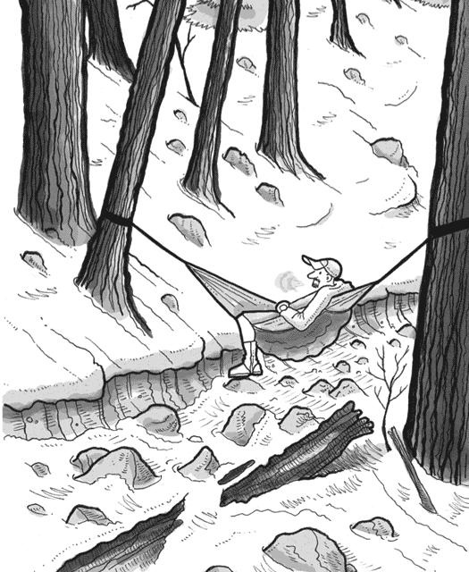
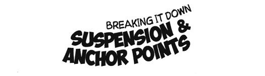
厚织带被普遍接受为创建锚点的事实标准，特别是围绕树木。但当涉及到悬挂线和硬件时，变化就是游戏的名称：Whoopie吊索(Whoopie slings)、三滑块(tri-glides)、Dutch夹子(Dutch clips)、下降环(descender rings)——也许吊床露营中最大的变化来自于将吊床连接到锚点。在这本书出版时，我毫不怀疑有人会发明一种新的方法来将吊床连接到锚点。为什么有这么多选择？为什么不只是一根绳子和几个好结？原因各不相同，通常归结为什么是快速、轻便和容易的。你自己的风格将决定哪种方法最适合你。也许你会尝试几种，只是为了好玩！我知道我会。
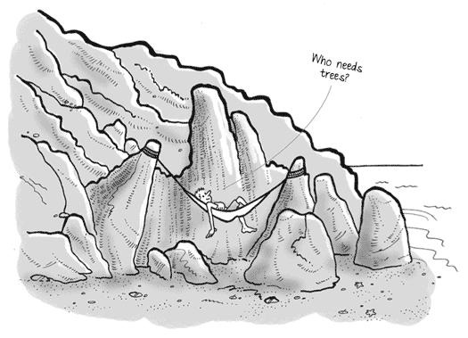
通常，悬挂吊床的第一步是设置锚点。使用”如何悬挂”下描述的方法可以帮助确定锚点的高度和间距。
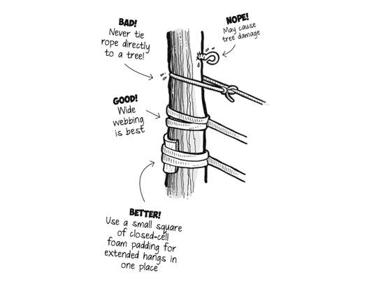
直接在树上系绳子可能对形成层有害。保护树皮的最佳方法是使用不拉伸的聚酯或聚丙烯织带（从1英寸（2.5厘米）到2英寸（5厘米）宽）通常称为”树带(tree straps)“或”树拥抱者(tree huggers)“来缠绕树木。避免尼龙带，因为它们拉伸太多。
织带有助于在树周围分散重量，一旦你移除吊床，几乎不留痕迹。
树带的长度是可变的，应该取决于你期望在荒野中遇到的树木大小。常见长度是6英尺（1.8米），但可以短至3英尺（91厘米）或长至10英尺（3米）或更长。许多悬挂者不仅将织带用作树拥抱者和锚点，还用作悬挂线，因此带子必须足够长以适应树径和到吊床的距离。
大多数织带都在两端缝制或打结了眼环。如果你要制作自己的织带并且不想缝制，8字结变体(figure-8-on-a-bight)是一个安全的结。一旦承重设置，8字结将很难解开，所以认为它是永久的。有了这些眼环，你可以夹上登山扣(carabiner)、Dutch夹子或其他连接器，轻松地将织带绕树连接。
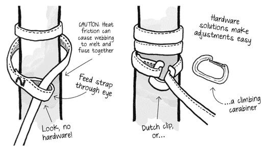
有几种将织带绕树的方法。这种方法效果很好：绕树一圈，然后用登山扣连接两个眼环。如果你有一个登山扣或Dutch夹子连接到一个眼环中，你可以快速夹住或滑动织带的固定端到夹子上以完成连接。没有硬件，你也可以将织带的固定端滑过眼环。登山扣和Dutch夹子快速且允许容易重新定位，如果你需要调整。将织带穿过环需要额外的硬件，因此稍微轻一些，但组装和拆卸需要更多时间。复杂的绑扎或绕树的额外包裹使得调整吊床变得困难，拆卸也需要更长时间。
连接树带后，你现在有了一个锚点，可以连接吊床的悬挂线，或者如果长带子能够到达你的吊床，你可以使用长带子作为悬挂线。
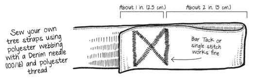
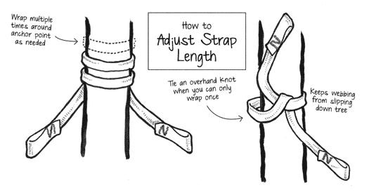
在过去几年中，一个有趣的创新是Whoopie sling。这些可调节的环索多年来一直被树木学家用于树木修剪或其他树木学工作。使用空心绳索，通过将绳索穿过绳芯创建拼接绞索来形成环索（吊索）。就像中国指套陷阱一样，张力从两侧施加，外绳收缩拼接处，锁定环索的大小。Whoopie slings设计有两个眼环：一端是拼接的固定环，连接到吊床（通常使用云雀头结），另一端是可调节环，连接到织带锚点。一些Whoopie slings在可调节眼环上制作了一个小珠子，以防止将环拉入拼接处。
Whoopie slings更常用Dyneema绳索制作——这是一种坚固而轻便的合成绳索（通常称为Amsteel Blue），有多种颜色可选。Amsteel的特点是同等尺寸下强度如钢铁且非常轻便。它不会反弹，也能浮在水面上。Whoopie slings通常用7/64英寸的Amsteel制作（额定承重1,600磅），甚至1/8英寸的Amsteel（额定承重2,500磅）。Whoopie slings很容易调节。


提示： 要超轻装备？织带可以兼作背包上的压缩带
或用来捆绑笨重装备，如熊罐或睡垫。我甚至用过一根当腰带。

虽然Whoopie slings很酷很时髦，但织带同样容易用于调节和搭建吊床。既然你已经在使用织带创建到树的锚点，你所需要的就是足够长的织带来连接你的吊床。织带的长端成为悬挂系统的可调节部分。通过使用扣环或三角滑块等硬件选项，你可以快速调节和固定你的吊床。
大多数商业吊床都配有已连接到吊床的绳索，包括Hennessy、ENO、Trek Light Gear、Grand Trunk、KAMMOK、Planet Hammock等许多品牌。Hennessy型号配有长段绳索作为悬挂线。更常见的是，绳索只是通过云雀头结连接在吊床末端的短环。这为Whoopie sling、攀岩扣、拨钮、Elephant Trunks或下降环提供了很好的连接点。
绳索比织带更容易打结。但是，结会降低绳索的承重等级，一旦设定就很难解开，而且不如织带容易调节。在吊床上始终使用高质量的攀岩绳索。
有多种连接器可以将你首选的悬挂系统连接到织带。以下是一些最常见的方法：
用于攀岩和绳降的金属扣夹，非常适合连接吊床到悬挂系统和织带，但要确保扣环具有攀岩等级。钥匙链和迷你扣环在施加过多重量时会很快弯曲和失效，应该避免使用。快速释放线门扣环是最容易使用的，因为你不需要某些扣环具有的锁定功能。
这些扣环看起来类似于三角滑块，但中心柱可以移动。束紧扣也用于调节从树到吊床的长织带。在扣环后打一个半结以防止滑脱。
这些小金属环也借鉴自攀岩和绳降社区。最初用于促进绳降中绳索的回收，你可以将两个下降环一起使用来调节树和吊床之间长织带的长度。将织带穿过两个环，然后再穿回顶部那个。下降环需要安全结（半结）以防止织带滑脱。
这种扣夹由DutchWare的”Dutch”开发，形似马蹄铁。这些扣夹非常轻便，没有活动部件，使设置变得简单无忧。Dutch clips可以代替攀岩扣环，轻松连接围绕树或其他支撑物的织带。
另一个用于创建锚点的产品是Smart Outdoors的Elephant Trunk。这些铝铸硬件设备将三角滑块与钩子结合，这样你可以将织带连接到一端，将吊床悬挂线（如Whoopie slings）连接到钩子上。
在所有创新的扣夹、滑块、扣环、拨钮和吊索被使用之前，将吊床固定到织带的最常见方法是通过结和绑扎。这比使用额外的硬件更轻，也不容易丢失。Hennessy介绍了直接绑在织带上的”8字”绑扎法，创建了一个安全的锚点。可以使用其他结或绑扎方法，但有些绳索比其他绳索更好用。攀岩绳和辅助绳在打结方面比滑溜的Dyneema（制作Whoopie slings的材料）效果更好。
结和绑扎的一个缺点是它们不如Whoopie slings或带织带的硬件选项那样容易调节。一些安全结用于攀岩和绳降，包括8字结和单套结。但是，一旦施加重量，这些结就会绑紧，所以如果你计划解开和调节绳索，它们就不实用。织带对织带，或绳索对织带，一旦施加压力就会发热和熔化。每次悬挂后检查磨损和损坏。
一个效果不错的绳结是在锚点处连接登山钩环(carabiner)的滑动云雀头结或围箍结(slippery Lark’s head)。我首先在Hennessy吊床上尝试了这种方法，使用的是套件自带的原装绳索。我厌倦了捆绑绳索，因为在满意之前总是需要对吊床做一些细微调整。
滑动云雀头结效果非常好，所以我在其他露营吊床上也使用了这种方法。我使用5毫米的登山绳，即使在大雨中也能牢固固定。我喜欢滑动云雀头结的地方在于，只需快速拉一下主绳端，就能松开绳结进行调整或收拾。

小贴士： 在进入野外之前，务必在后院的安全环境中多次测试你的悬挂装置。
扣环(Toggles)—扣环几乎可以是任何东西：铝制地钉、迷你钩环、铅笔、小木棍等。使用时，将扣环放入织带的环中（织带上的固定环或可调节环如水手结等），然后将悬挂绳围绕织带放置。扣环不直接承重，所以不需要很结实。但是，确保悬挂绳（如Whoopie吊索）是环绕在织带上而不是在扣环上，否则可能会断裂。

这是我最常用和最喜欢的将悬挂带（Whoopie吊索）连接到织带的方法。扣环简单易用，如果在路上丢失也容易更换。你也可以从几家制造商那里购买预制的扣环。

小贴士： 碳纤维和铝制箭杆制作出色的轻量扣环。其他扣环选择包括钛合金或铝制地钉（切成两半）和旧玻璃纤维帐篷杆的金属连接部分。不要丢失你的扣环—小心地在一端钻一个小孔，可以系上绳子让扣环永久连接在织带上。
三角扣(Tri-glides)—这种金属扣是露营吊床常用的配件。金属三角扣是一块有两个长孔的金属片，织带穿过其中。通过三角扣滑动织带来调节带子的长度。打一个安全结（半结）防止织带滑脱。
水手钉结(Marlinespike Hitch)—这是一个不绑定的临时绳结，可以系在织带的任何位置，为扣环的放置创建一个点。这个结相对容易系，当你移除扣环后容易解开。
确保将悬挂绳放在绳结上，而不是直接放在扣环上。轻量扣环之所以有效，是因为它不承受载荷的全部力量。
水手钉结本质上是一个活结，扣环放在绳套中。通过将环穿过孔来系这个”滑动”的单结。扣环滑过环，然后整理并拉紧绳结。将吊床悬挂绳放在整理好的绳结上，你就准备好悬挂了！
这个结是常用的连接器，因为它容易系，不需要额外的硬件，并且便于调节织带或锚点的长度。
在天气防护方面，有些人喜欢全覆盖，而其他人更喜欢不用顶部遮盖。这里没有对错之分，你的选择取决于许多因素：重量、成本、体积、覆盖范围、多功能性、易用性和个性化等。
在温和条件下，几乎任何防水布都可以改装以提供良好的覆盖、通风和隐私。较大的防水布提供更多保护和选择。
实际上，在吊床中保持干燥的技巧很简单。有了好的防水布、一些滴水线和天气遮盖，你可以从各个角度得到保护，并拥有完全的隐私。
在恶劣条件如大雨、雪和风中，先搭建防水布再搭吊床，以保持你和装备的干燥。你可以使用绳结或任何硬件选项来搭建防水布。多功能性意味着你可以选择最适合的方式来平衡重量、强度、易用性和个人喜好。

小贴士： 如果你的防水布脊线从防水布下方穿过，请添加滴水线。
大多数防水布脊线属于两种类型之一：仅端部或全长。仅端部线基本上消除了防水布系绳点之间的绳索，可以减少一些重量。全长脊线贯穿防水布的整个长度，可以从防水布下方或上方穿过。两种风格都可以与防水布一起安装和收纳，使搭建更容易。
使用全长脊线，你可以先设置线，然后沿着线调整防水布使其居中。用全长脊线在支撑点之间居中防水布通常比仅端部线更容易。
将防水布悬挂在全长脊线上提供额外的结构，在极端条件下如湿雪暴或强风对防水布施加额外压力时可能更受欢迎。这样脊线可以帮助支撑额外重量。脊线从防水布下方穿过时，还提供方便的点来悬挂装备晾干、夹灯或连接防虫网。
无论您使用全长脊线还是在末端使用拉绳，将防水布脊线固定到树支撑上的绝佳方法是创建一个”V”形。对于仅在末端的拉绳，使用两个半结将绳子的一端系在防水布上，然后将主绳绕树缠绕，并使用可调节的张紧结将其系回防水布。对于全长脊线，将一端系在迷你扣环或S形扣环上，然后将扣环夹在防水布上。活动端绕树缠绕，穿过扣环夹住，然后在防水布上方或下方穿过对面的第二个登山扣。在第二棵树周围再做一个”V”形，然后固定到登山扣上。
有了创建的”V”形空间，吊床悬挂系统可以在”V”形之间来回摆动，很少或没有与防水布脊线发生碰撞。
不喜欢打结？ 有多种方法可以在不打一个结的情况下固定防水布脊线（尽管结很有用）。大多数无结方法需要某种硬件替代品，如Nite Ize的Figure-9或迷你登山扣。吊床社区已经开发了许多用于固定防水布脊线的设备，其中包括Tarp Flyz、Tarp Key和Tarp Cross。这些硬件选项都非常轻便，但足够坚固以承受防水布的拉力。无结硬件通常需要您将绳子在硬件周围缠绕几次以获得牢固的固定。
提示： 使用切换器！架设全长脊线，并将绳子的弯曲部分向上推过防水布的D环或环圈。

用弯曲部分围绕切换器打一个双套结，两边都重复。调整并拉紧脊线完成。
为了更好地适应吊床的形状和独特属性，一些专门的防水布样式已经变得流行，包括不对称(asymmetric/a-sym)、菱形、六角形和全封闭”冬季”防水布。一些制造商创造了独特的设计组合，包括不对称六角形防水布，但这些样式并不常见。大多数露营和背包旅行防水布使用轻便、防水的聚酯和尼龙织物，可以小尺寸包装。硅胶浸渍尼龙(silnylon)是一种流行的轻量化织物选择，但超轻背包客更喜欢立方纤维(cuben fiber)和三角帆织物，重量是silnylon的一半，但成本可能是两倍。每种防水布样式和织物选择在重量、耐久性、体积和成本方面都有其优缺点（更不用说样式和个别供应商的工艺）。
便宜的”工业”防水布可以在零售店找到，适用于吊床露营，但对于背包旅行来说可能太重太笨重。
大多数Hennessy吊床的标准配置是不对称(a-sym)防水布。这些防水布被缝制成平行四边形，以反映人在吊床中的躺卧方式。大型雨披甚至可以用作不对称防水布（Hennessy实际上销售一种可以拉链成无帽雨披的a-sym防水布）。a-sym防水布在中等雨暴中足够用，但请记住，较小的防水布需要更高的技能才能在恶劣条件下保持吊床和装备干燥。例如，使用a-sym防水布时，在与防水布织物相反的方向上斜着睡觉可能会让您的头部和脚部暴露在恶劣天气中。

提示： 在大暴雨期间，您可能会感到防水布内侧有”雾气”。这可能只是凝结水滴松动脱落。在silnylon防水布的罕见情况下，如果您将防水布拉得太紧，雨水的压力(PSI)可能会将微小水滴推过织物。要阻止这种情况，请将防水布架设得稍微松一些，这样织物可以弯曲，减少压力。
方形防水布，角对角架设成菱形，为吊床提供一般到很好的覆盖，取决于其尺寸。基本的8×8英尺(2.4×2.4米)防水布创建超过11英尺(3.3米)的脊线——足够覆盖大多数吊床。菱形防水布效果很好，除了在侧向暴雨中，类似于a-sym防水布。菱形防水布的优势，如a-sym一样，是它只需要两个拉绳点，所以架设快速。
六角形(hex)防水布在吊床露营中很常见。六角形防水布通常具有悬链线切割边缘，创造紧张的架设并几乎消除材料在风中的拍打。如果六角形防水布有足够的侧面拉绳，您可以折叠末端以创建临时门，在所有方向上完全密封。六角形防水布有”鸟嘴”，在脊线上提供额外覆盖。
全覆盖防水布或”冬季”防水布最适合四季露营，当您需要最大程度保护免受恶劣天气影响时。有些人将冬季防水布描述为四面墙帐篷，在某些情况下这是准确的。冬季防水布通常在侧面有额外的织物，可以转动和架设以密封常规和六角形防水布的开放末端。一些制造商销售售后”门”作为六角形或矩形防水布的可选附件。
冬季防水布通常比任何其他防水布样式都要宽得多，因此侧面可以架设得很低，消除通风和地面飞溅。这些防水布通常具有侧板拉绳点，以创造宽敞的内部空间并在强风阵风中加强防水布。
大型防水布还为更换衣服等提供良好的隐私，但它们架设起来可能更复杂，可能重量更大，可能需要额外的硬件（例如，地钉、拉绳）。
在人流量大的区域，比如热门露营地附近，你可能会发现土壤压实，容易积水并向吊床下方溅起水花。防止地面溅水的第一道防线要回到选址上。例如，厚苔藓层或松针层覆盖的地点能更好地吸收水分。额外的保护可以通过延伸到地面的大防水布、底部遮盖或全封闭吊床套来实现。
## 底部遮盖
底部遮盖或”防护罩”就像是用防水织物制成的第二个吊床，悬挂在吊床和保温层下方。底部遮盖在不用于防止地面溅水时，还可以充当装备悬挂袋。在潮湿条件下，底部遮盖效果很好。
## 吊床套
将整个吊床包围起来的遮盖叫做”吊床套”。想象一根两端收紧的织物管子，你就能有个直观的概念。吊床套能很好地防止地面溅水，还能通过阻挡风流和创造静止空气层来增加保暖性。有些吊床使用者在没有防水布的情况下使用吊床套，创造出一个悬浮的临时庇护所。要小意：根据具体条件，除非潮湿的呼出空气能够排出，否则织物上可能会聚集冷凝水。就像地面临时庇护袋一样，吊床套可以用透气和不透气/防水织物制成，以提供透气性和防水保护的最佳组合。
## 隐私性
有些人担心吊床在需要隐私时不能像帐篷那样提供全面遮盖。对于小型非对称或菱形防水布来说这可能是个问题，但大型”六角形”或矩形防水布能提供充足的遮盖，特别是当搭建得较低或用作屏障时。冬季防水布或带有附加门的防水布就像帐篷一样提供完全的隐私保护。
技巧： 将换洗衣物放在吊床里方便取用。

携带一小块3×3英尺(1×1米)的特卫强(Tyvek)®包装材料或塑料布作为地布/脚垫，在换衣服时保持脚部和装备离开地面。
我更喜欢在防水布后面或下面换衣服，那里有更多空间，而不是在帐篷里扭动身体。有了防水布，我可以舒适地站立或坐着换衣服，减少挫败感。
良好的选址和正确的搭建是从防水布获得最大隐私保护的两个因素。
## 细节处理
### 防止滴水
在大暴雨中，雨水可能沿着悬挂绳流下，从两端浸湿吊床。你可以通过在悬挂绳上附加滴水线来重新引导这些水流。水会流向最低点，所以一旦接触到滴水线，就会沿着线流到地面。除了滴水线外，一些硬件选项也能重新引导水流，包括下降环和收紧扣等。硬件能自动完成滴水线的工作。如果在防水布下正确定位，甚至胡普绳(Whoopie Sling)的运行端也能充当滴水线。
### 拉绳
菱形或非对称防水布只有两个拉绳点，所以搭建可以很快。大约六英尺长的拉绳能够到达附近的天然支撑点（岩石、树枝等）或地桩。在恶劣条件下，带足够的拉绳将防水布搭建得较低以获得最佳保护，或搭建得较高以在天气平静时创造一个门廊，获得更好的视野和通风。
许多防水布在夜间会拉伸（特别是尼龙基防水布），当织物上积聚水分（如露水、雨水和冷凝水）时，即使睡前拉得最紧的搭建到早上也可能松弛。你可以通过在拉绳上改装一段弹性绳来创造自张紧拉绳。你也可以从几个制造商那里购买现成的自张紧拉绳。设置拉绳时，将其拉紧使弹性绳伸展开。有了拉绳上的弹性绳，防水布会保持紧绷，因为当织物在夜间拉伸时，弹性绳会收紧松弛部分。
### 防水布搭建技巧
当我得到第一个露营吊床——亨尼西(Hennessy)时，当时的建议是将防水布直接固定在吊床悬挂绳上。“太棒了！”我想，“一次性搭建吊床和防水布！”但一旦我进入吊床，防水布中心下垂得太厉害，失去了紧绷的搭建效果。这不是亨尼西吊床的问题，而是将防水布固定到吊床悬挂系统上的一个小问题。使用自张紧拉绳和脊线系结点能有所帮助，但最好的方法是将防水布直接系到树/锚点上。保持防水布与吊床分开系结，确保无论吊床如何移动，防水布都能保持紧绷。
在晴好天气中，防水布可能是可选的，但最好随手可得。因此，睡前先拉好防水布脊线，这样如果需要，防水布随时可以挂上。有些吊床使用者将防水布卷起或塞在管状蛇皮袋(Snake Skin sacks)中，以便快速展开。
当预报中没有雨水但可能有风和露水时，将防水布脊线搭建在与树带相同的高度。这将在防水布顶部和吊床之间提供更多空间，以便更好地通风。
根据风向和湿气流向，搭建防水布时让一侧角度较低且贴近以提供保护，而另一侧拉高并开放。开放的一端可以用登山杖、木棍支撑，或系到附近的树上。结果是一个带门廊的单坡庇护所，这样你就不必为了保持干燥而牺牲视野。
如果你有一个大的”冬季”或矩形防水布，在好天气中使用时，只需将侧面架高（例如”门廊模式”），固定或卷起来收拾好。具有多个固定点的大型防水布比小型非对称防水布提供更多搭建选择，因此可以全年使用。缺点是大型防水布更重，需要更多时间正确搭建。
在暴风天气中，搭建防水布时要让脊线非常接近吊床主体。一旦进入吊床，你会下垂远离防水布。固定时要让末端拉绳或全长脊线位于吊床悬挂系统和树带下方。当你进入吊床时，防水布会保持低位，防止风吹雨水接触你的装备。更大的防水布，包括冬季防水布，有足够的织物可以将末端扣到地面以获得完全覆盖。
将吊床两侧的搭建角度调整为陡峭且贴近地面。在寒冷多风的条件下，将侧面搭建到地面可以消除对流热损失。陡峭的搭建也能更好地排雪。
在冬季，重量和体积通常不太重要，因为食物和保温要求更高。热衷冬季露营的人经常使用称为雪橇(pulk)的拖拉式雪橇来携带冬季所需的额外装备。具有多个固定点、额外面板和末端门的大型冬季防水布是提供更大保护的受欢迎功能。
将防水布搭建到雪地（或地面）可以捕获散失的热量并防止风将其带走。在雪量大的地区或条件下，你可以建造围墙和隧道来进一步保护你的庇护所或增强小型防水布的效果。
不建议在防水布内使用空间加热器、炉子或明火，因为材料极易燃烧。

在夏季，当夜间温度高于70°F（20°C）时，你可能只需要一条轻薄的抓绒毯子或丝质床单就能保持舒适。低于70°F（20°C）时，你需要一些”额外的”东西来在吊床中保暖。有很多方法可以为吊床保温，所以你的决定将基于个人舒适度、费用和风格！
吊床保持凉爽的原因是它们悬挂在开放空间中，循环的空气（对流）从四周带走热量。这在夏季是有益的，但在寒冷时就很糟糕了。由于蓬松的保温材料在睡觉时会被压缩，仅使用睡袋几乎得不到什么温暖。温暖的空气被困在保温材料的蓬松度或厚度中。
像我之前的许多人一样，我最初使用睡垫在吊床中保暖。这种方法效果还可以，但我发现很难让睡垫贴合吊床的形状，而且标准的20英寸（51厘米）睡垫宽度无法为我的肩膀提供足够的覆盖。吊床用户尝试了几乎所有方法来保持肩膀和背部温暖，包括聚酯薄膜”太空”毯、气泡膜，甚至铝化汽车遮阳板。
除了睡垫，吊床先驱者还尝试将睡袋围绕吊床，这导致了其他创新，如底部被子(under quilts)。这些技术让吊床用户能够在极端冬季条件下舒适温暖地睡眠，温度可低至-20°F（-30°C）以下。
简单有效，睡垫可以在吊床中使用，也可以在万一必须睡在地面上时作为备用。对于吊床新手来说，睡垫是一个简单、便宜的选择。大多数露营睡垫只有20英寸（51厘米）宽，无法覆盖肩膀区域。为了解决这个问题，Dave Womble引入了”分段睡垫扩展器”，将闭孔泡沫睡垫的切割部分装在织物套中，创造更好的覆盖范围并将所有睡垫部分保持在一起。
另一种效果良好的技术是将闭孔泡沫睡垫切成两半，然后转动这些部分以获得更好的肩膀覆盖。一半用于上半身和肩膀，另一半覆盖下半身和腿部。你可以将短的闭孔泡沫睡垫用于肩膀，将全长睡垫用于躯干和腿部保护。随着温度下降，可以组合更多睡垫以获得更厚的保温。
充气睡垫也能使用，但许多人让它们稍微欠充气，以便更好地贴合吊床主体。其他有效的”睡垫式”保温选择包括Reflectix[®]（用于覆盖管道的铝覆盖气泡膜）、汽车遮阳板（铝覆盖式）甚至纸板。
睡垫并非设计用于贴合吊床轮廓，我发现它们不如其他选择舒适。睡垫可能在吊床中滑动（如果没有夹在套子中），这可能产生冷点。
一些吊床采用双层织物制造，形成一个大套筒，可以容纳某些类型的保温材料。在某些型号中，层间距离如此接近，只能容纳薄的压缩保温材料，如闭孔泡沫睡垫。
Clark丛林吊床(Clark Jungle Hammocks)专门在下方建造了大型织物隔间，可以放置体积大的物品用作保温，包括衣物或天然材料如枯叶或松针。空的隔间创造死气空间，有助于温暖睡眠。
将吊床低悬在地面上的天然材料堆（叶子、松针等）上方是在意外寒流时增强睡眠系统的另一种方法。
最早尝试为吊床保温的方法之一是像蚕茧一样把普通睡袋拉上来。需要一个带拉链脚部的睡袋，这样吊床的悬挂绳才能穿过。我在秋天成功使用过这种拉上式睡袋，效果很好。但是，我发现无法获得很好的对角线躺姿，这导致肩部过于挤压。好消息是我很暖和，比睡在地面上舒适得多。
Ed Speer改进了拉上式睡袋并销售，称为”PeaPod”。这是一个专门制作的拉上式睡袋，中间更宽，两端织物收窄。像拉上式睡袋一样，PeaPod会限制躺姿，但它确实有额外的功能，比如专为吊床设计的顶部入口拉链。
在吊床中保暖最经过验证的方法之一是使用底部保温被。有多种类型可供选择，每种都在重量、体积、价格和易用性之间取得平衡。底部保温被本质上是悬挂在吊床下面的半个睡袋，这样保温材料不会被压缩，并且有额外的宽度可以包裹肩膀。Jacks ‘R’ Better首先销售了全长底部保温被。Brandon Waddy后来推出了3/4长度的底部保温被，覆盖躯干和大腿上部，但头部和小腿不隔热。这是一种减重措施，因为许多吊床用户发现他们的小腿需要较少的保温，使用切割尺寸的闭孔泡沫垫就足够了。佩戴保温头饰完成整个系统。
小贴士：确保底部保温被一旦包裹住吊床，两端能够正确密封。

如果两端不够贴合，宝贵的热量可能会逸出，导致[冷屁股综合症(Cold Butt Syndrome)]。
就像睡袋一样，底部保温被可以找到不同类型的保温材料（合成纤维和羽绒）和不同厚度适用于所有季节。底部保温被通常采用差异挡板制作，设计成可以紧贴吊床拉紧，同时仍能在下方蓬松，从而提供足够的空间来困住热量并保持温暖。
底部保温被通常在两端配有弹性绳来固定在吊床上。弹性绳通过提供一些灵活性来防止保温被损坏。一些底部保温被沿着保温被边缘有通道。这允许保温被沿着吊床长度滑动和调整。在两端系紧弹性绳的底部保温被必须进行调整，有时需要伙伴的帮助，以确保提供适当的覆盖。
小贴士：用棍子拨片为底部保温被即兴制作夹子！

任何睡袋都可以在吊床内工作，虽然进入睡袋可能需要一些技巧。观看吊床用户试图进入睡袋时的扭动对观察者来说很有趣，但对吊床用户来说很沮丧。一种技巧是在进入吊床和躺下之前先把睡袋拉到身上。如果你能轻松坐在吊床上，这种方法就有效。缝入式防虫网可能会使这个过程复杂化。可穿戴睡袋，如Selk’Bag，使用起来很容易，因为睡袋有腿和胳膊，让你可以正常操作和进入吊床。
另一种技巧是除了脚部区域外，将睡袋拉链打开。摊开睡袋后，你可以进入吊床，将脚滑入睡袋的脚部区域，然后像被子一样将睡袋的两侧塞在身边。
实际上，被子式睡袋（去掉睡袋的背部、帽子和拉链）在吊床用户中很常见，因为它们消除了不需要的功能，减少了重量和体积。顶部保温被与包裹躯干和肩膀的相应底部保温被完美匹配。
在温暖的天气中，60°F（16°C）或更高时，不感性和感性出汗（水蒸气、汗水）通过你的保温材料”呼吸”。露点（水蒸气变成液体的温度）通常在睡袋外的某个地方，会在你的防水布上出现冷凝，有时如果没有完全蒸发，会在睡袋的外层出现冷凝。
在寒冷的天气中，低于30°F（-1°C）时，露点下降到你的身体和睡袋外部之间的某个地方。微小的水滴在内部形成，随着时间的推移，会压缩你的保温材料，导致蒸发性热损失。没有VBL，你的身体会更努力地产生热量，转化为可能浸湿你的保暖层的汗水，并促进脱水、血液循环不良和呼吸效率低下。
小贴士：VBL必要吗？不是。这只是在吊床中保暖的另一个选择。
一些吊床用户在非常寒冷的条件下使用它们并发誓有效，但其他人真的不喜欢它们。
你的身体会自动调节产生更多或更少的不感性和感性出汗来适当地加热和冷却自身。VBL阻止身体蒸汽的传输，在VBL和你的身体之间创造一个微气候，减少蒸发性热损失和过热。VBL还能保持水分不进入你的保温材料（睡袋、顶部保温被等）。
通常在VBL和皮肤之间穿一层底层衣物，这有助于最小化”湿粘”的感觉，而不会降低身体的自然体温调节。一旦你的身体感应到合适的微气候，它就会停止产生水分。
另一种加热吊床的方法是烧开水，然后将其装入密封水瓶中，比如1升Nalgene宽口容器。将这个热水瓶放在睡袋的任何地方以增加温暖。一个好位置是放在双腿之间，那里有股动脉。当我使用热水瓶时，我喜欢将它放在小腿和脚部附近。
在弗吉尼亚州2月与童子军的一次寒冷旅行中，我对当时的条件准备不足。我只带了一个闭孔泡沫垫作为底部保温。这是我吊床露营经历的早期，我以为我会没事的。随着温度下降，我开始感到寒冷。这是我第一次在吊床中使用热水瓶技术。热水瓶保持了我的核心温暖。
选址是关键。尽一切努力将吊床设置在受保护的空间内，远离山脊线、低洼处、水源和多风区域。
分层穿衣——从贴身的排湿基础层开始。添加保温层，如抓绒、聚丙烯或羊毛（如果真的很冷，穿上所有衣服睡觉！）。
双层睡袋、内胆和棉被。如果你不介意额外的重量和体积，添加额外的层次以获得更多蓬松度将让你更暖和。
睡前吃些食物。你的身体在新陈代谢（燃烧）卡路里时保持温暖。进食让你的系统进入产生热量的处理模式。
睡前喝水（保持水分）。在寒冷中，你的身体经常努力保持温暖，消耗大量能量。你的身体继续出汗，但寒冷会使其难以察觉。许多人没有意识到在冬天脱水是多么容易。当你脱水时，血容量减少、变稠，更难泵送。这是你的四肢（脚、手）首先变冷的原因之一。血液循环不良会让你面临体温过低和冻伤的危险。
去洗手间！ 虽然保持水分很重要，但你不想消耗热量来保持体液温暖。当你感觉有需要时，快速解决——不要等！
戴暖帽。我喜欢微纤维巴拉克拉瓦帽或其他头部装备来保持脸颊、脖子和面部温暖。较厚的帽子或保温羽绒帽在吊床中使用起来更容易，特别是如果你使用无帽顶部棉被或睡袋。
脚部穿袜子或保温靴套。手部佩戴手套内胆、护腕套或手套。
添加顶盖、底盖或防风罩。
使用化学暖手器。
如果使用底部棉被(under quilt)，确保端部密封良好。如果你难以在吊床上获得良好贴合，请使用三角适配器。
飞行（和/或叮咬）昆虫是个麻烦！蚊子、黑蝇、蠓虫(no-see-ums)、摇蚊、蚋等会毁掉任何户外睡眠——无论是帐篷还是吊床。但虫子不应该阻止你获得良好的睡眠。大多数在帐篷中防虫的解决方案同样适用于吊床，尽管吊床有其特殊的挑战和机会。在昆虫方面，吊床可能只在一个领域优于帐篷：通过悬挂在空中，你避免了爬行、滑行、粘滑的虫子进入或附着在你的庇护所上。另一方面，飞行昆虫是一个特殊问题。不用担心！作为吊床使用者，你可以利用不同的技术来避免恼人的飞行昆虫。
许多昆虫，特别是蚊子，在黎明和黄昏时最活跃。计划何时进出吊床可能帮助你将这些飞虫挡在庇护所外。在虫子较少的月份安排行程也是一种技术，但如果你计划的行程恰好与蚊子密度高峰期重合，这并不总是可能的。
根据几项研究，深色材料（衣服、织物等）比浅色材料更吸引蚊子。如果可能，选择浅色的吊床和防水布织物。用浅色材料也更容易看到蚊子（和蜱虫）。
使用驱虫剂，如氯菊酯(Permethrin)来处理吊床织物，可以真正让虫子远离你的庇护所。适当稀释的氯菊酯溶液应用到吊床上可以持续几次行程。你也可以找到装在易于使用喷雾瓶中的氯菊酯。氯菊酯可用于处理衣物、吊床、防虫网、防水布、悬挂绳——一切！
一种新的、正在受到关注的天然驱虫剂是柠檬烯酮(Nootkatone)，一种葡萄柚提取物。这让蚊子、蜱虫和其他虫子感到恐惧，而且对人类和动物无毒。根据FDA，柠檬烯酮是一种食品添加剂，正式归类为”通常认为安全”。柠檬烯酮不仅驱赶虫子，还会杀死它们。
几个露营吊床，包括Warbonnet Blackbird、Tree-to-Tree Trail Gear Switchback、Hennessy Hammock Explorer、Jacks ‘R’ Better Bear Mountain Bridge Hammock、Clark Jungle Hammock NX 150和Grand Trunk Skeeter Beeter，都有永久性附着的防虫网。这是一种无忧无虑的防虫方式。随时可用的网非常方便。一些型号，如Switchback和NX 150，可以几乎完全移除网，或在不需要时拉开拉链。其他吊床包括灵活的杆子，将网推出以在吊床内创造更宽敞的空间。
如果你追求开箱即用的便利性，那么包含防虫网的一体化系统是最佳选择。
许多吊床只配备”吊床本体”，仅此而已。要获得防虫保护，你需要为系统添加额外的配件包。你可以找到环绕吊床并配有拉链入口的防虫网。这些网子比缝制防虫网有优势，因为它们提供全方位覆盖，不需要时可以完全拆除。
DIY装备制造商创造了许多利用吊床独特特性的防虫网解决方案。有了固定的脊线(ridgeline)，“松散”的网子可以覆盖在吊床上，或者裁剪缝制以适应特定需求或风格。

Hammock Bliss的一个独特设计是推出了集成防虫网的防水布，称为Sky Tent。Sky Tent采用底部入口设计，配有加固尼龙。这种网子不仅创造了宽敞的无虫天堂，还能在暴雨期间提供一定程度的反射飞溅保护。
在吊床中使用头部防虫网是可能的，但只能提供最基本的保护。棒球帽可以防止网子贴在脸上，但你需要在其他地方保持覆盖以免被叮咬。我曾经使用过专为地面设计的bivvy防虫网，但在吊床中使用很困难，因为它会缠绕在身上。紧急情况下可以用，但不是最佳选择。
我最喜欢的”极简主义”防虫网之一是我自己设计的。我称它为”HUG”或”半防虫网”。在和孩子们一起吊床露营后，我想要一个可以快速退出而不用摸索耗时的拉链或抽绳的网子。解决方案是一个用简单切换系统”拥抱”吊床的设计，覆盖在顶部便于进出。这个设计需要最少的缝制，重量很轻（3-4盎司/85-113克）。为了超轻量化，我使用薄纱(Tulle)面料代替防蚊网或纳米防蚊网。薄纱不太耐用，但重量减轻了一半以上。
HUG在有无脊线的吊床上都能很好地工作，所以你不必拆除或对系统进行任何特殊修改。简单地将网子覆盖或”拥抱”在脊线上，固定一端的魔术贴。有结构性脊线时，用结（如prussik环）或硬件选项将弹力绳直接连接到脊线上。没有脊线时，简单地将弹力绳拉到对面的悬挂线上并连接。用绳锁调节器调整弹力绳的张力。
透过吊床叮咬—一些吊床使用者报告即使有防虫网也会被透过吊床叮咬。这通常发生在皮肤直接接触吊床面料或网子时。根据面料不同，蚊子可以在纤维间找到空隙。对于网子，在侧面设置拉绳和固定绳可以帮助将面料拉离身体。双层面料的吊床可以消除蚊子叮咬，某些类型的面料编织也可以。有底被(under quilt)或穿衣服也足以防止透过吊床面料的叮咬。
2码防蚊网，55英寸宽或更宽
7码，3/4英寸织带滚边（可选）
6个1/2英寸织带切换环
12英寸Omni胶带（无钩魔术贴）
3码1/8英寸弹力绳
2个绳锁
2个2×2英寸厚尼龙面料片
1. “Integrated Mosquito Management.” (n.d.)
http://www.entomology.wisc.edu/mosquitosite/homeremedy.html
吊床不仅有内置舒适性，易于设置，使用起来很有趣，还很适合改装。吊床使用者不断增强和定制他们的吊床体验。从睡眠方式到配件，吊床使用者总是在寻找下一个最好的东西。
这些技巧中的许多都是反复试验不眠之夜的结果，而其他一些看起来如此明显，让人惊呼”我怎么没想到？“以下是一些让吊床成为优秀露营庇护所的其他想法。
使用连接到吊床的结构性脊线来悬挂装备收纳袋，存放手电筒、钥匙或iPod®等零散物品。
将水瓶、书籍或其他物品放在吊床下方触手可及的地方。
树木保护带是吊床的好固定点，也适用于背包。将背包悬挂在地面上方，远离喜欢啃咬汗水浸泡装备的缺盐动物。
一块Tyvek房屋包装纸、小块闭孔泡沫”坐垫”、承包商3密耳垃圾袋或厚塑料片可以制作很好的轻量地垫放在吊床下，保持装备干燥，并在进出吊床时提供脚垫。垫子可以在需要时兼作坐垫，并可作为超轻无框背包的包架使用。
许多资深吊床使用者建议架设吊床时让脚端比头端稍高一些。这可以帮助防止你在夜间滑向吊床中间。如果你长途跋涉，这也有助于腿部血液回流。一些人声称这增加了一点舒适性。
什么比一个吊床更好？为所有装备准备的第二个迷你吊床！你可以在商店买到装备阁楼吊床（ENO有售），或者可以自己缝制。这些迷你吊床是背包、额外衣物、书籍、灯具、靴子等的绝佳存储区域，是保持装备离地的另一种方式。一如既往，将有气味的物品远离睡眠区域。迷你吊床在需要时也可以兼作天气屏障或包盖，提供临时天气保护。
我通常在吊床上仰卧睡觉，但根据心情不同，或者如果找不到舒适的位置，我会侧卧。这种胎儿姿势是一种常见的睡眠姿势，非常舒适。（这里没有什么技巧：只需转向一侧即可舒适入睡）。在膝盖之间放一个枕头，可以为臀部和下背部提供额外支撑。
腿部姿势
使用聚拢式吊床时，身体位置的轻微变化可以使吊床布料的构成发生有趣的变化，有时会产生之前不存在的高点、脊线或”壁面”。吊床的这种动态能力是其最大优势：在贴合身体形状的同时消除压力点。但有时也会产生问题。一个常见问题是一条或两条腿过度伸展。几种腿部姿势可以消除这种压力。一种是弯曲一条腿的膝盖，保持另一条腿伸直。我称这个姿势为”芭蕾舞者”。将弯曲腿的脚放在伸直腿的膝盖下方，可以消除腿部紧张。
另一种方法是保持双腿伸直，一条腿叠放在另一条腿上。我最常使用这种方法。整夜我会切换哪条腿在上方，以便缓解任何不适感。
对于柔韧性好的人，可以将脚掌相对，膝盖分开——青蛙腿姿势。
腿部和颈部支撑
吊床很好地支撑了头部，但不支撑颈部。就我个人而言，枕头太大会扭伤我的脖子。我喜欢在颈后放些东西，类似于围绕头部两侧的旅行枕，提供额外的舒适感和支撑。一个轻量化的解决方案是将多余的衣物卷起来放在颈部下方。
许多小作坊制造商销售小型吊床枕头，包括一段弹性绳和夹子，这样你可以将枕头固定在吊床上，避免夜间丢失——这是市场上其他紧凑型背包枕头所没有的功能。
如果腿部过度伸展，尝试在膝盖下方放些东西支撑。卷起的毛衣或长管枕头能提供恰当的弧度，消除任何紧张感。也可以调整吊床的倾斜度和下垂程度来消除腿部下方的”壁面”。一些吊床，如Warbonnet Blackbird，通过在一端增加”脚盒”(foot box)来解决这个问题，使脚部稍微下垂。
没有树？没问题。
即使经过最好的规划，有时你会发现露营地点没有足够的树木或锚点支撑，或者你计划在树线以上只携带吊床。不用担心——露营吊床仍然能很好地处理这些情况。如果环境迫使你睡在地面上，你的庇护系统可以轻松转换，让你的吊床兼作防水布帐篷和防虫网——一个单人野营袋(bivvy sack)——根据夜间需要而定。如果你携带登山杖，可以将它们用作防水布的支撑杆。
吊床支架
支架非常适合后院使用，特别是在附近没有其他锚点选择时。大多数商用吊床支架是为编织横杆吊床制造的，对于许多露营吊床来说，高度和长度都不够。你可以在HammockForums.net上找到修改或自制吊床支架的说明，包括适合露营吊床的多吊床支架。
我想要一个多吊床支架，用于童子军露营活动，以及在后院与孩子们一起悬挂。锚定式多吊床支架设计符合我的需求，因为它易于建造，需要的工具最少，使用便宜的材料（不到40美元），重量轻，运输方便。作为额外奖励，一个人可以在不到10分钟内搭建完成（一旦所有绳索都设置好会更快）。
材料
3块8英尺2×4英寸木板
6根3英尺钢筋桩
300英尺3/8英寸聚酯绳
1根1英尺1/2英寸木榫
建造 使用电钻，在每块木板顶部钻两个1英寸（2.5厘米）的孔，底部钻一个1英寸（2.5厘米）的孔。这些孔用于固定支架的绳索。接下来，在距离底部约6英尺（1.8米）处钻第三个孔（1/2英寸/1.5厘米）用于木榫。这成为可以连接吊床和防水布的锚点。
顶部三角形的每边长14英尺（4.25米）。这个三角形由一根连续的绳索构成，还需要一些额外长度来打卡车绳结——总共约50英尺（15.25米）。
侧面和底部绳索都是10英尺7英寸（3.25米）长。将每根切成13英尺（4米）以留出打结的余量。
设置
将桩排列成六边形。半径应为14英尺（4.25米）。最简单的方法是准备两根14英尺（4.25米）的绳子。从中心点开始，用第一根绳子测量第一个桩点。然后，使用第二根绳子从第一个桩和从中心点的绳子来确定下一个桩点。使用这种模式确定六个桩点。
固定侧面和底部绳索。使用两个半结(half-hitches)固定两端。重要的是侧面绳索是独立的绳段，但底部绳索可以是约24英尺（7.3米）长的连续绳线，穿过杆子底部的孔。
将顶部绳索穿过顶部孔。拉紧绳索收紧松弛，支架就会竖起。在一端打一个8字结，将其作为锚点，然后使用卡车绳结使结构紧绷。在结上进行任何微调，确保立柱呈60°角。
技巧：我购买了三根100英尺（30米）长的绳索，每根

不同颜色：红色用于顶部；黄色用于侧面；绿色用于底部，以便在视觉上组织设置。
室内悬挂
当你无法满足吊床露营的需求但假期已经用完时，是时候在室内设置你的吊床了。这是测试新装备并在下次终极悬挂前让你的庇护所”调试到位”的好方法。室内悬挂与户外悬挂遵循相同的规则（例如，锚点之间的距离、离地高度、安全性等），问题是找到合适的悬挂位置和放置锚点（或获得在墙上钻孔的许可）。
在我自己的家中，我在两个房间设置了锚点，可以悬挂多个吊床。由于木制螺栓通常隐藏在油漆和石膏板后面，请仔细敲击墙壁以定位木材（你也可以使用电子”螺栓探测器”）。使用大型重型眼螺栓或类似硬件作为锚点。先钻导向孔，然后将眼螺栓固定到墙上。现在你可以在需要休息时随时在室内设置吊床。
越来越多的人在室内悬挂（有些是全职的！）以享受在家附近吊床的好处。
坐在吊床里
是的，坐在吊床里是有技巧的！吊床可以作为很好的躺椅、休闲椅和椅子，甚至可以模拟大豆袋椅。你可以用各种方式操纵聚拢端吊床的布料来满足你的需求。
如果你曾经垂直坐在吊床里，你可能经历过我称之为”桶形座椅”的效果。聚拢端吊床有这种效果，你实际上会”陷入”中心，这取决于尺寸和悬挂角度。这种效果并不坏，但它可能会让你的膝盖高高抬起接近胸部。这可能很烦人，特别是如果你想坐得高一些与某人交谈，或者吃个糕点。
解决方案？从吊床长边取一个边缘并将其折叠到中心。一旦你将边缘向内折叠，将布料摊开并坐在这个加固的边缘上，形成一个坚实、平坦的座位。完美！
提示： 对于一些带有缝制防虫网的吊床型号，只需

在将其转换为椅子之前将吊床翻转过来（这样网在下面）。

另一种流行的坐姿是我称之为”办公桌”的姿势。一旦进入吊床，交叉双腿并使用吊床的倾斜布料作为临时桌子。在头顶放置一盏灯，它就成为写日记、查看第二天徒步路线图或支撑一本好书的绝佳工作空间。
吊床布料可以移动、转动和操纵以创造新的形状，这反过来创造了新的可能性。
底被三角适配器
有时候，无论你怎么尝试，底被就是无法正确贴合或调整。在某些吊床上，传统的底被悬挂可能会将被子拉得太远，造成不需要的缝隙。三角适配器将连接点移动到更靠近吊床中心的位置，减少底被悬挂角度，有助于闭合缝隙并创造更紧密的贴合。
Arrowhead Equipment目前在线销售这些三角适配器，适用于全长和3/4长度的底被。
要使三角适配器工作，你需要在吊床上安装一条脊线。这可以是集成防虫网的一部分或你自己安装的独立脊线。脊线提供了三角适配器工作所需的结构。
三角适配器通过角落的夹子进行调节。角落夹子直接连接到底被上。
快速设置
一个调试良好的吊床系统——防雨布、防虫网、保温层和所有配件——可以在几分钟内设置完成。通过良好的打包、快速连接夹和简化的悬挂绳，吊床可以在大多数地面露营者甚至还没有拆开帐篷时就挂好。尝试这些快速步骤来加速你的悬挂：
有目的地计划和打包吊床装备。建立一个有效的例行程序。
设置防雨布
安装织带绳
悬挂吊床
连接保温层（如果防虫网是分离的，也要连接）
计划和打包是快速高效设置的关键。正如俗话说，“垃圾进，垃圾出。”如果你的装备打包不当，它会阻碍快速悬挂。作为一般规则，我将吊床组件分开保存。在潮湿天气中，我的防雨布单独放在背包外面，可以快速取用而不干扰背包中的其他物品。作为额外好处，防雨布可以在我徒步时透气。有些人将吊床和保温层打包在一起。我将吊床分开保存，这样可以确保我的保温层在设置时保持干燥。然后，如果我要停下来吃午餐并需要一个软椅子，我可以拿出吊床而不用摆弄保温层或防雨保护。
我的许多吊床都有内置收纳袋，我小心地从中心开始打包吊床，这样当我完成时，带有悬挂绳（在我的情况下是Whoopie吊索）的两端位于袋子的顶部。这样，我可以拆开吊床并逐步展开，这样它永远不会碰到地面。如果你小心的话，防雨布也可以用同样的方式打包，这样脊线上的两端是最后塞进去的，当你准备悬挂时是第一个出来的。
被称为”蛇皮袋(Snake Skins)“的长筒状收纳袋由Hennessy Hammock开发，也可以用来把所有装备打包在一起。这些蛇皮袋(Snake Skins)保持与悬挂绳连接，所以当需要打包时，你只需把套筒拉过睡眠系统即可收纳。蛇皮袋(Snake Skins)装满后可能难以处理，所以要确保把它们包裹好。我喜欢用树抱带来包裹装满的蛇皮袋(Snake Skins)。你可以找到各种尺寸的蛇皮袋(Snake Skins)：小而薄的适合装天幕，或大而宽的适合装完整系统，包括天幕、保温层和吊床套装。

小贴士： 如果你想用这种方式把吊床和保温层一起打包，请使用大尺寸的蛇皮袋(Snake Skins)收纳袋。
一端有扣眼另一端有束紧锁的收纳袋，被称为主教袋(Bishop Bags)，也可以收纳吊床以便快速搭建。双面收纳袋有类似功能。这些袋子通常像蛇皮袋(Snake Skins)一样与吊床悬挂系统保持连接。如果你想把吊床套装——包括保温层等——直接装进背包，甚至可以完全不用收纳袋。保持组件连接在一起（例如，防虫网缝制或预先固定在吊床上）的好处是可以加快搭建过程。再次强调，找到适合你的系统并练习，这样在雨中或黑暗中也能快速搭建。
使用”三步法”选择距离合适的结实树木。我喜欢使用与天幕分开打包的全长脊绳。这条脊绳上连接两个迷你登山扣，一个扣在末端的环上，另一个扣在普鲁士结上，这样可以根据树径和树间距离沿脊绳调节。将绳子一端绕树缠绕并将登山扣扣在绳上。另一边也这样做。
小贴士： 根据天气条件设置天幕脊绳的高低。

脊绳设置好后，打开天幕收纳袋，拉出一个尖端，将D环扣在登山扣上。我打包天幕时将两个脊绳端放在顶部便于取出。这样我可以拉出天幕并扣好另一边而不让天幕接触地面。
调节脊绳使天幕在树间几乎绷紧，但要足够松弛以便可以前后滑动天幕而不切入树皮。

小贴士： 使用Dutch夹或登山扣等硬件选项加快搭建。像KAMMOK Python Straps这样带有预缝连接点的长织带也能加快搭建。
让天幕角绳自由悬挂以便滑动天幕直到它在树间居中。最后，通过系紧角绳固定天幕。如果幸运的话，使用附近的树木或灌木来系角绳。在多岩石地区，可以用岩石代替：不需要地钉。
搭建天幕只需几分钟，就能提供干燥空间来设置其余装备。
如果你的天幕只有端部系绳点，先系好一边，然后慢慢拉出天幕并系好另一边。张绳结是很好的可调节绳结，但你也可以使用硬件选项。
天幕居中后，你可以用它作为吊床的指导。用脊绳测量树抱织带的放置位置。在天幕脊绳上方约1英尺（30厘米）处将织带固定在树上。这样可以让吊床悬挂接近神奇的30度角。

小贴士： 挂你自己的挂法(HYOH)。换句话说：做适合你的事。如果你感到舒适并享受这种体验，那就坚持下去！
为了固定织带，我推荐快速连接硬件。我偏爱Dutch夹，我发现它是目前最简单、最快速、最轻便的硬件选项。根据树的直径，调节织带以获得合适的长度。
两个锚点都设置好后，拿起吊床（装在自己的袋子里）将一端连接到一个树抱带上，然后慢慢拉出布料并将第二端连接到最后的树带上，使其不接触地面。

小贴士： 吊床不仅适合长距离超轻背包客，它们也非常适合为期一周的童子军营地、史诗般的独木舟或皮划艇旅行、周末汽车露营冒险、日间徒步时的放松，或在室内休息。
根据你的偏好，你可能会发现其他选项更快或更容易。就个人而言，我发现正确的硬件组合总是比绑绳索或打结更快。
有些人可能会争论一旦吊床搭好，计时就停止了，但由于保温层和防虫网是吊床露营的重要组成部分，所以要追求完美！
大多数底被通过迷你登山扣连接到吊床的两端——这是使搭建快速简便的另一种方法。有些底被与三角适配器或特定型号的吊床配合效果更好，除非预先设置好，否则可能会减慢搭建速度。如果你使用睡垫，将它们放在吊床内并拍松睡袋或被子铺在上面。
小贴士： 尽快取出并拍松你的保温层，这样它有足够时间在你睡觉前蓬松起来。如果压缩时间过长，保温层可能会降解，特别是合成材料。

最后，添加任何额外组件，如防虫网（除非你的吊床已预装），或天气保护罩。我个人偏好的防虫网是HUG，或半防虫网。这种极简主义的网格可以快速连接在我的吊床周围，并塞入底部被子中以提供额外保护。
当需要收拾时，吊床用户很轻松。吊床保暖装备可以坐在床上装袋。由于我把背包当作大型装袋，我可以坐着把顶被和底被直接装进背包底部，放在一个大型3毫升承包商垃圾袋内。保暖装备永远不会接触地面。我换下睡衣并将它们装进背包。其余装备按照取出时的相反顺序重新打包：防虫网、吊床、悬挂系统、炊具和食物。防水布最后打包。如果湿了，我把它放在外部网袋或绑带下，否则就放在背包最顶部。
旅行后，好好保养装备很重要，这样它们能使用很长时间。确保防水布完全干燥后再打包，以避免发霉。同样的规则适用于睡袋和被子等保暖装备。羽绒和合成保暖材料可能需要几天才能完全风干。
吊床可以定期用温和的洗涤剂机洗或手洗。让吊床在打包前晾干。查看个别护理说明进行机洗和烘干。
吊床和防水布可以安全地储存在压缩装袋中。另一方面，保暖装备应该储存在大型透气储存袋中，这样蓬松度不会受损。
清洗装备上的任何污垢或碎屑。合成纤维不应长时间暴露在阳光下，以避免紫外线(UV)损伤。
检查所有装备的磨损情况。根据需要更换或修理。
如果你想了解最新创新并与其他吊床用户聊天，没有比HammockForums.net (HF)更好的地方了。在HF，你会找到技巧、技术、参与的装备制造商列表，以及甜蜜装备交易的机会。那里的人们友好、乐于助人，愿意交流知识来帮助同伴。注册免费，对话总是引人入胜。
还是无法满足对吊床露营的渴望？我也是。有希望！这些网站有技巧和技术，会让你着迷几天。
GrizzlyAdams/Professor Hammock
虽然你几乎在任何地方都能买到吊床，但我整理了一份专门从事吊床露营装备和配件的制造商名单。扫描这个二维码轻松在线联系这些制造商。
制造商
2Q & ZQ Hammock Specialities × × ×
Arrowhead Equipment × × × ×

Byer of Maine Hammocks × × × ×
Clark Jungle Hammocks × × × × ×
Claytor Mosquito Hammocks × × ×
Crazy Creek × × ×
DD Hammocks × × × × × ×
DP Hammock Gear × × × × ×
DutchWare × ×
Eagles Nest Outfitters (ENO) × × × × × ×
Exped (Expedition Equipment) × × × × ×
Gargoyle Gear × × × ×
Gossamer Gear × ×
Grand Trunk × × × × ×
Hammock Bliss × × × × ×
Hammock Gear.com × × × ×
Hennessy Hammock × × × × × ×
Jacks ‘R’ Better × × × × × ×
KAMMOK × × × × × ×
Lawson Hammock × × × ×
Mountain Laurel Designs × × × ×
My DIY Gear by “Papa Smurf” × × × × × ×
New Tribe—Tree Boat Hammocks × × × × × ×
NK Outdoors × × ×
Outdoor Equipment Supplier × ×
Planet Hammock × × × ×
Smart Outdoors × ×
SoCo Hammocks × ×
Speer Hammocks × × × × × ×
Terra Rosa Gear × ×
Ticket To The Moon Hammocks × × × ×
Tree to Tree Trail Gear × × × × × ×
Trek Light Gear × × × × ×
UK Hammocks × × ×
Warbonnet Outdoors × × × × ×
Wilderness Logics [× × × × × ×]
ZPacks × ×
选择适合季节和行程的装备（例如，更保暖的睡袋、雪地装备等）。这是一个通用装备清单，仅应作为指导使用。
庇护所
❏ 吊床
❏ 树带
❏ 悬挂绳
❏ 索具硬件*
❏ 吊床脊线(Ridgeline)* ❏ 防虫网*
❏ 装备阁楼*
❏ 脊线装备收纳器* ❏ 地垫*
❏ 防水布
❏ 天气保护罩*
❏ 吊床套*
❏ 拉绳
❏ 地钉*
❏ 防水布脊线
❏ 索具硬件*
睡眠
❏ 底被
❏ 顶被
❏ 睡袋
❏ 睡垫
❏ 蒸汽屏障内胆*
打包
❏ 背包
❏ 压缩袋
❏ 背包内胆
水分补充
❏ 水容器（最多4升）
❏ 净化方法
服装
❏ 基础层
❏ 衬衫
❏ 裤子/短裤
❏ 躯干保温层（2层）
❏ 腿部保温层
❏ 雨具（上衣和下装）
❏ 袜子
❏ 鞋子/靴子
❏ 遮阳帽
❏ 保暖帽（巴拉克拉法帽）
❏ 手套（内胆和外壳）
厨房
❏ 炉具（火柴/引火器）
❏ 燃料
❏ 锅
❏ 勺子
卫生
❏ 牙刷、牙膏
❏ 急救包 ❏ 胶带（多用途！）
❏ 厕所套装（卫生纸、湿巾、垃圾袋、铲子） ❏ 防晒霜
杂项
❏ 头灯/照明
❏ 地图和指南针
❏ 哨子
❏ 刀
❏ 太阳镜
食物
*可选